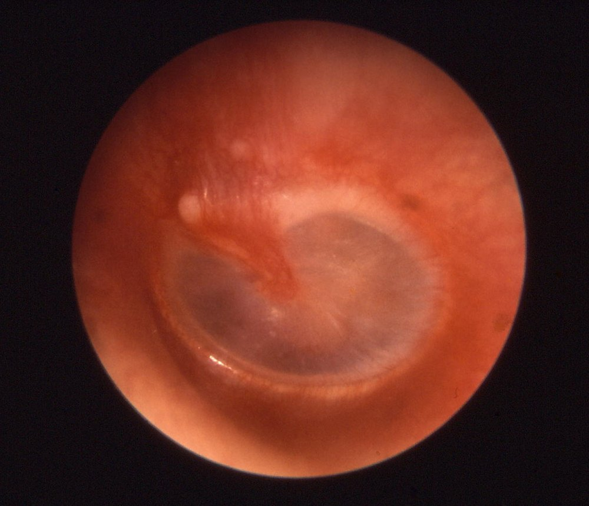
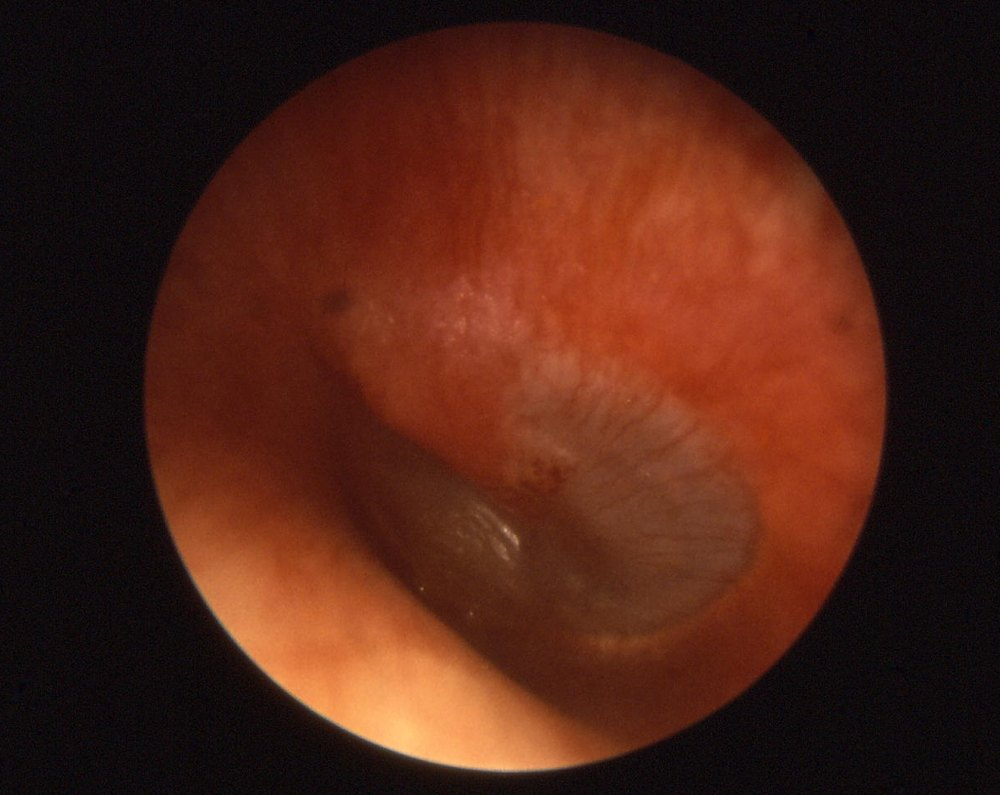
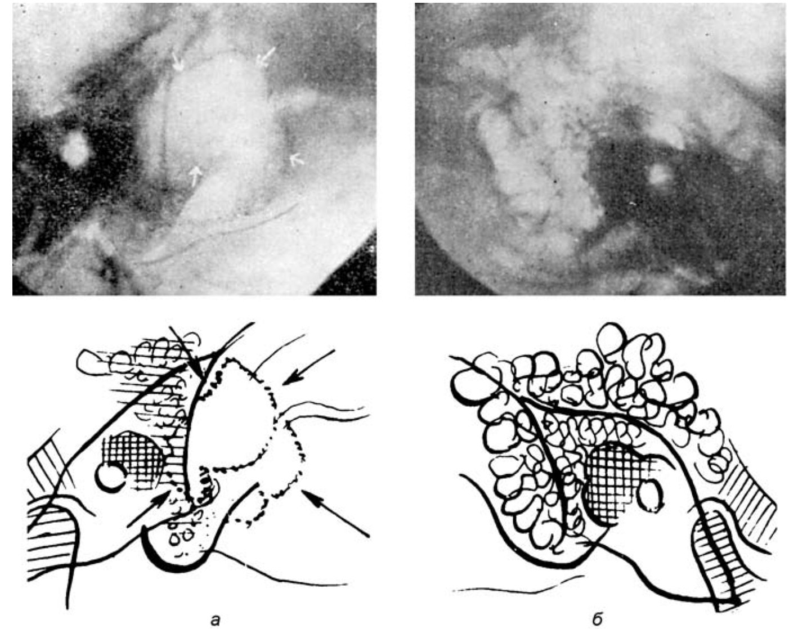
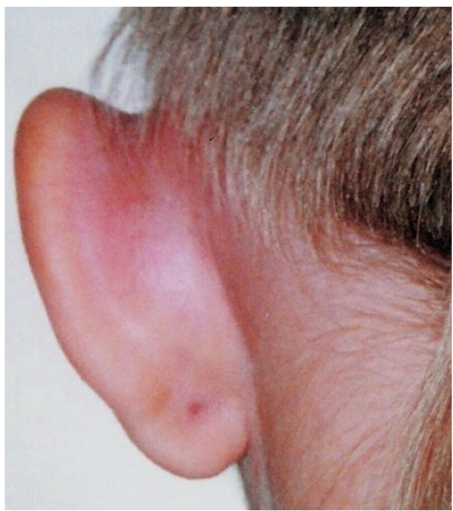
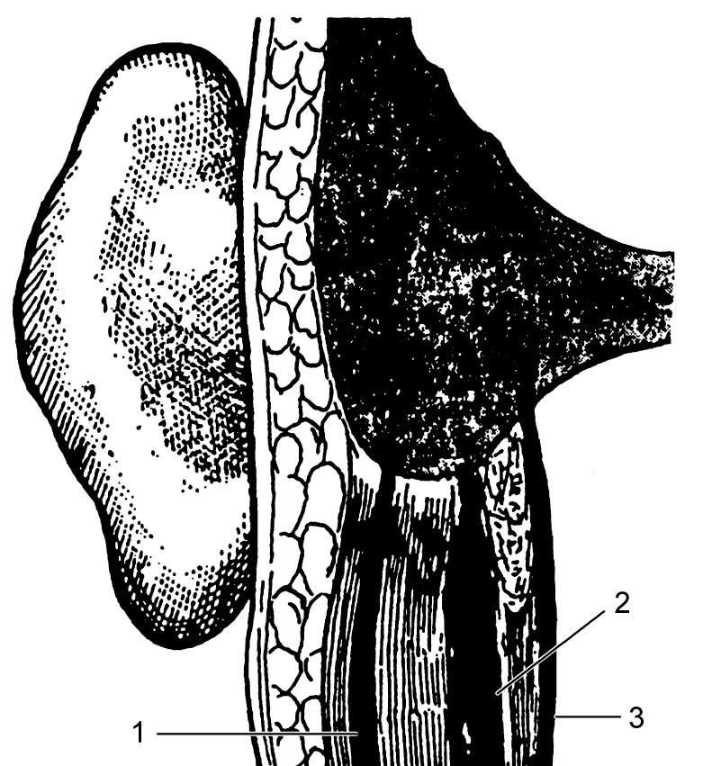

Острый и экссудативный средний отит, мастоидит
Среднее ухо и слуховая труба: общие положения о воспалении
Заболевания среднего уха относятся к наиболее сложным по этиологии и патогенезу процессам в ЛОР-органах. Причина в положении органа: среднее ухо граничит с задней и средней черепными ямками, непосредственно сообщается с лабиринтом, а через слуховую трубу связано с носоглоткой и всеми верхними дыхательными путями. Б. С. Преображенский образно назвал среднее ухо придаточной пазухой носоглотки, поэтому любой патологический процесс в трубе и носоглотке отражается на состоянии барабанной полости, а дренажную и вентиляционную функции для среднего уха обеспечивают именно носоглотка и труба. Из среднего уха инфекция может распространиться на соседние структуры и вызвать синус-тромбоз, менингит, абсцесс мозга, лабиринтит, апицит. по: Бабияк и соавт., т. 2, с. 514
Воспалительные заболевания среднего уха разделяют на острые и хронические, банальные и специфические, неосложнённые и осложнённые, тубогенные и гематогенные. Классификация Б. С. Преображенского, Я. С. Темкина и А. Г. Лихачёва в дополнении В. Т. Пальчуна и Н. А. Преображенского включает острый и хронический катар среднего уха, аэроотит, острое воспаление среднего уха (неперфоративное и перфоративное, аллергический средний отит, отит при общих инфекциях, острый мастоидит), воспаление при травматических поражениях, хронический гнойный средний отит (мезотимпанит и эпитимпанит) и специфические воспаления. Авторы подчёркивают, что схема не исчерпывает всех сочетаний, особенно когда банальная инфекция наслаивается на специфическую. по: Бабияк и соавт., т. 2, с. 514–515
Автор зарубежного руководства по ЛОР-болезням исходит из того, что патология большинства хронических заболеваний среднего уха сводится к двум функциональным нарушениям: расстройству вентиляции и воспалению. Они тесно связаны: хроническое нарушение вентиляции вызывает воспаление слизистой оболочки, а воспаление ухудшает функцию трубы. Классификация отитов, по Probst и соавт., не стандартизована, формы болезни образуют непрерывный ряд: после острого среднего отита несколько недель сохраняется выпот, как при секреторном отите, а секреторный отит может перейти в острый при присоединении инфекции. по: Probst и соавт., с. 234, 238
Дисфункция слуховой трубы
Термин «дисфункция слуховой трубы» обозначает нарушение её функции, которое приводит к разнообразным симптомам и физикальным признакам, но не обязательно к определяемой патологии среднего уха. Дисфункция бывает острой и хронической. Острая возникает при заложенности носа во время простуды или при аллергическом рините и, как правило, преходяща. Дисфункцию, продолжающуюся более 3 месяцев подряд, считают хронической; она бывает обструктивной и связанной с зияющей (patulous) трубой. Определение остаётся нечётким. по: Scott-Brown, гл. 86, с. 1040
Нарушение вентиляции почти всегда вызвано дисфункцией трубы, причём сниженная проходимость встречается чаще избыточной. Просвет сужается при воспалительном отёке слизистой оболочки, например при вирусной инфекции верхних дыхательных путей: воздух в барабанной полости всасывается, возникает отрицательное давление, которое ещё больше ухудшает работу трубы. Отрицательное давление возможно и в здоровом ухе при быстром повышении внешнего давления, например при посадке самолёта. К другим причинам относятся внешнее сдавление опухолью, недостаточное активное раскрытие трубы мышцей, напрягающей нёбную занавеску (особенно при деформациях челюстей и нёба), врождённый или рубцовый стеноз. по: Probst и соавт., с. 234–235
Инфекционные и неинфекционные воспаления тоже участвуют в развитии болезни. В детском возрасте особенно важен аденоидит: размер глоточной миндалины имеет меньшее значение, поскольку она редко непосредственно закрывает трубу, а хронический аденоидит создаёт резервуар патогенной флоры. Обструкции носового дыхания, ринит и риносинусит поддерживают аденоидит. Аллергическое и токсическое воспаление, а также заброс желудочного содержимого, особенно у младенцев с короткой трубой, могут усиливать воспаление слизистой оболочки. по: Probst и соавт., с. 235
Среди причин дисфункции в зарубежном руководстве названы также аллергическая предрасположенность с гиперплазией слизистой оболочки и носоглоточный кислотный рефлюкс. Расстройство обнаруживают примерно у 1% населения, а почти у 40% детей до 10 лет оно возникает временно. Среди оперируемых на среднем ухе пациентов дисфункцию выявляют не менее чем у 70%, и хорошая функция трубы считается важной для успеха вмешательства. Предрасполагают расщелина нёба, гранулематозные болезни, муковисцидоз, триада Самтера, синдром Картагенера. Дисфункцию необходимо отличать от других причин ощущения заложенности: заболеваний височно-нижнечелюстного сустава, дегисценции верхнего полукружного канала, болезни Меньера, повышения внутричерепного давления. по: Scott-Brown, гл. 86, с. 1040
При длительной блокаде трубы слизистая оболочка среднего уха претерпевает метаплазию: плоский эпителий замещается цилиндрическим мерцательным с бокаловидными клетками, секреция слизи возрастает, смесь слизи и транссудата образует серозно-слизистый экссудат, формируются холестериновые кисты (холестериновая гранулёма). Ранее неактивная слизистая оболочка превращается в секретирующую гиперпластическую, которая на любой раздражитель отвечает зрелой защитной реакцией. Возникает порочный круг ухудшения вентиляции и дренажа, а затяжное течение приводит к фиброзу и тимпаносклерозу. По Behrbohm и соавт., различают две формы расстройств вентиляции и дренажа: острую обратимую и хроническую, лишь частично обратимую. по: Behrbohm и соавт., разд. 1.4.1
Для оценки функции трубы описано более 40 методов, но ни один не даёт полной картины. Первичную ориентацию дают отоскопия, эндоскопия носоглотки, проба Политцера1, проба Вальсальвы (выдох при зажатом носе и закрытом рте) и проба Тойнби (глотание при зажатом носе). Определённую ценность имеют манометрические методы: тимпанометрия, тимпанометрия с распадом рефлекса, девятиступенчатый тест с нагнетанием и отсасыванием, тубоманометрия. Тубоманометрия, предложенная Estève в 2001 г., регистрирует изменения давления в закрытом наружном слуховом проходе при подаче дозированной струи газа в носоглотку во время глотания. Индекс раскрытия (R) менее 1 указывает на раннее открытие трубы и считается оптимальным. Для количественной оценки применяют шкалу функции трубы от 0 баллов (полная обструкция) до 10 (норма), в которой учитывают щелчок при глотании, результат пробы Вальсальвы и данные тубоманометрии. Для опроса пациентов создан семипунктовый опросник ETDQ-7. по: Scott-Brown, гл. 86, с. 1040–1041
Зияющую трубу (tuba aperta) отличить от обструктивной дисфункции бывает трудно, хотя это принципиально для лечения. Основные жалобы: аутофония, шум в ухе, синхронный с дыханием, ощущение давления и снижение слуха. Подвижность барабанной перепонки в такт дыханию не всегда выявляется, но при обнаружении имеет диагностическое значение. Различают собственно зияющую трубу, просвет которой открыт и в покое, и полузияющую, закрытую в покое, но раскрывающуюся при нагрузке, при похудании, когда уменьшается жировая подушка Остмана, или при лечении другого заболевания. Распространённость оценивают в 0,3%, при этом за помощью обращаются лишь 10–20% пациентов. В сочетании с привычным втягиванием носом (sniffing) состояние редко приводит к холестеатоме. Среди консервативных мер упоминают закапывание эстрогенов, насыщенный раствор йодида калия, разъяснение безвредности болезни; из хирургических мер — парацентез с шунтированием (облегчение симптомов у 53% ушей в одной серии), аугментацию барабанной перепонки хрящом, реконструкцию трубы. по: Scott-Brown, гл. 86, с. 1041–1042; Behrbohm и соавт., разд. 1.4.1.3
Острый катар среднего уха (тубоотит)
В отечественной литературе под острым катаром среднего уха понимают негнойное воспаление, возникающее при переходе воспалительного процесса из носоглотки на слизистую оболочку слуховой трубы и барабанной полости. В зарубежной литературе такое состояние рассматривают как наиболее лёгкую форму острого неперфоративного среднего отита любого происхождения, тубарного, простудного, гематогенного, инфекционного. По существу, изменения в слизистой оболочке идентичны таковым при начальной стадии банального острого среднего отита. Катар, то есть катаральное воспаление, является разновидностью экссудативного воспаления, развивающегося только в слизистых оболочках и сопровождающегося гиперсекрецией слизи; смесь экссудата, слизи и слущенных клеток стекает в полый орган и образует уровень. по: Бабияк и соавт., т. 2, с. 515–516
Синонимами служат экссудативный средний отит, сальпингоотит, тубоотит, туботимпанит, туботимпанальный катар и секреторный отит. По составу экссудата выделяют серозно-катаральное и гнойно-катаральное воспаление, а при обилии слущенных клеток — катарально-десквамативное, наиболее характерное для катаров верхних дыхательных путей, глотки и пищевода, а также для аэроотита. по: Бабияк и соавт., т. 2, с. 516
Первопричиной острого катара является нарушение вентиляционной функции трубы в результате катарального воспаления её слизистой оболочки, которое распространяется из носоглотки (аденоидит, ринофарингит). Возбудителями могут быть стрептококки, стафилококки, пневмококки или микробные ассоциации. Когда вентиляция исключена, слизистая оболочка всасывает воздух, в барабанной полости создаётся отрицательное давление относительно парциального давления газов в окружающих тканях, и в полость начинает пропотевать транссудат, а присоединяющееся воспаление стимулирует секрецию слизистых желёз и дает начало экссудации. Инфицирование экссудата банальной флорой ведёт к острому катаральному воспалению, которое при соответствующих условиях может перейти в острый гнойный перфоративный средний отит, но вирулентность флоры при типичном катаре минимальна. По патогенезу авторы называют катар примером системного заболевания, в котором участвуют воспаление в носоглотке и трубе, аэродинамические нарушения системы «труба — барабанная полость», аномальное давление в полостях среднего уха, воспаление слизистой оболочки, транссудация и экссудация. по: Бабияк и соавт., т. 2, с. 516
Заболевание чаще всего возникает после простуды с насморком или катаральным назофарингитом. Первым симптомом бывает периодическая заложенность одного или обоих ушей, исчезающая после закапывания сосудосуживающих капель в нос, сморкания или чихания. Затем заложенность становится постоянной, присоединяются низкочастотный шум, аутофония и тугоухость различной степени. При выпоте тугоухость обусловлена повышением импеданса барабанной перепонки и цепи косточек из-за вязкости транссудата, а при большом объёме выпота ещё и отражением звуковых волн от жидкости; при малом выпоте её причиной служит втяжение барабанной перепонки и повышение ригидности цепи. Могут появляться небольшие боли в ухе, более выраженные у детей и отдающие в нижнюю челюсть, обусловленные резким втяжением перепонки и рефлекторным сокращением внутренних мышц. по: Бабияк и соавт., т. 2, с. 516–517
Отоскопическая картина соответствует стадиям воспаления. В стадии гиперемии наблюдается инъекция сосудов вдоль рукоятки молоточка, умеренное покраснение и втянутость перепонки, затем появляются радиальная инъекция сосудов, инъекция в расслабленной части и укорочение светового конуса. В стадии катарального воспаления в барабанной полости увеличивается просвечивающий выпот: перепонка приобретает матово-серый, желтоватый, а при геморрагическом выпоте синюшный или лиловый цвет. Уровень выпота патогномоничен для острого катара; при жидком подвижном выпоте он остаётся горизонтальным независимо от положения головы. Перепонка неподвижна при исследовании пневматической воронкой с лупой Зигле. Характерны втяжение перепонки, почти горизонтальное положение рукоятки молоточка и выступание короткого отростка в просвет прохода (симптом указательного пальца), резкое укорочение или исчезновение светового конуса. по: Бабияк и соавт., т. 2, с. 517–518
При продувании трубы по Политцеру или катетером часто наступает временное улучшение слуха и уменьшается втяжение. В норме отоскоп Лютце выслушивает во время пробы Вальсальвы или продувания дующий звук без тональных гармоник, при суженной трубе звук приобретает свистящий характер, при полной обтурации не выявляется. Подвижный выпот может быть размазан по стенкам, тогда его уровень на время исчезает, а на внутренней поверхности перепонки появляются пузырьки воздуха. При резком втяжении перепонки изредка отмечается лёгкое несистемное головокружение. Слух снижен по кондуктивному типу, преимущественно на низкие частоты; шёпотная речь воспринимается у раковины или с расстояния не более 1–2 м, разговорная речь — 3–6 м. по: Бабияк и соавт., т. 2, с. 517–518
По данным Behrbohm и соавт., острая блокада трубы (серотимпанум) проявляется чувством давления в ухе при ринофарингите, колющей болью, снижением слуха и треском при глотании. При отоскопии определяются втянутая перепонка, гиперемия рукоятки молоточка и сосудов, при транссудате янтарная окраска натянутой части, иногда уровень жидкости и пузырьки, умеренная кондуктивная тугоухость. Дифференцировать необходимо с острым средним отитом. Лечение направлено прежде всего на основное заболевание: деконгестанты и сосудосуживающие средства при ринофарингите, антигистаминные препараты; антибиотики назначают лишь при угрозе перехода в средний отит. Предупреждают: пробу Вальсальвы и продувание при остром воспалении носоглотки выполнять нельзя из-за риска занесения инфекции в среднее ухо, а вместо болеутоляющих ушных капель, которые мацерируют эпителий и затрудняют распознавание отита, следует применять анальгетики внутрь. Течение обычно быстро завершается выздоровлением, но иногда болезнь переходит в хронический серозно-муцинозный отит. по: Behrbohm и соавт., разд. 1.4.1.1
Диагноз прямой, основывается на жалобах, отоскопической картине, наличии хронических воспалительных состояний верхних дыхательных путей и трубы, исследовании проходимости трубы, данных импедансометрии и тимпанометрии. Дифференцировать следует с острым гнойным воспалением в доперфоративной стадии, для которого типична сильная боль, а труднее — с латентными отитами младенцев и острым воспалением среднего уха у стариков. Прогноз зависит от состояния носоглотки и трубы, аллергического фона, вирулентности флоры и качества лечения. Клиническое развитие допускает самоизлечение, быстрое излечение при минимальном целенаправленном лечении, излечение с остаточными явлениями, организацию экссудата с рубцами и тимпаносклерозом, инфицирование с развитием острого или хронического гнойного отита; при этиопатогенетическом лечении болезнь чаще всего исчезает бесследно через 1–2 недели. по: Бабияк и соавт., т. 2, с. 518
Наиболее эффективным считают этиопатогенетическое лечение: ликвидацию хронических очагов инфекции в носоглотке и глотке (хронический аденоидит, хронический тонзиллит, тубоотит), терапию при аллергическом фоне и хронических воспалительных процессах в околоносовых пазухах, нормализацию носового дыхания при полипах и деформации перегородки и местные меры; при неэффективности последних выполняют «малые» хирургические вмешательства — парацентез, миринготомию, тимпанотомию, шунтирование барабанной полости. Местное лечение начинают с введения в нос сосудосуживающих растворов и аэрозолей (нафазолин, ксилометазолин). Затем в поликлинике или стационаре продувают слуховые трубы после анемизации глоточного устья и катетеризируют их: в барабанную полость на одно введение вводят 10–15 капель суспензии гидрокортизона ежедневно в течение 3–5 дней, при вязком содержимом добавляют свежеприготовленный раствор протеолитического фермента (10 мг химотрипсина на 5 мл изотонического раствора, обычно 1 мл). Одновременно назначают антигистаминные и противоотёчные препараты в сочетании с аскорбиновой кислотой и глюконатом кальция внутрь. Появление пульсирующей боли, усиление гиперемии и выпячивание перепонки служат основанием для антибиотиков широкого спектра; для рассасывания содержимого применяют физиотерапию (согревающий компресс, соллюкс, УВЧ, лазеротерапию). по: Бабияк и соавт., т. 2, с. 518–519
Хронический катар среднего уха и аэроотит
Хроническим катаром среднего уха называют первично или вторично возникшее хроническое катаральное воспаление, осложнённое организацией и склерозом экссудата. В полости образуются спайки и рубцы, ограничивающие подвижность звукопроводящей системы и вызывающие тугоухость по типу нарушения звукопроведения. Вторичный вариант является следствием хронизации острого катара у лиц, ткани которых склонны к келоидному рубцеванию. В анамнезе, как правило, часто рецидивирующие тубоотиты, лечение которых давало временный и неполный эффект. Основная жалоба на медленно прогрессирующую тугоухость; при отоскопии выявляют признаки адгезивного отита, резкую втянутость и деформацию перепонки, неподвижность при пробе с воронкой Зигле, непроходимость трубы. Организация транссудата вызывает анкилоз суставов косточек и контрактуры мышц, затем наступает тимпаносклероз с обездвиживанием основания стремени, в далеко зашедших случаях склероз преддверия, с исходом в тугоухость III–IV степени или глухоту. по: Бабияк и соавт., т. 2, с. 519–520
В лечении используют те же приёмы, что при остром катаре: продувание, катетеризацию и бужирование труб, введение протеолитических ферментов и суспензии гидрокортизона, электрофорез с лидазой или раствором йодида калия, пневмомассаж перепонки при отсутствии перфорации. В. Т. Пальчун (1978) для повышения эластичности рубцов предлагал вводить лидазу в барабанную полость через катетер или инъекцией через перепонку (0,1 г в 1 мл 0,5% раствора новокаина), на курс — 4 введения с интервалом 4 дня. При неэффективности прибегают к тимпанотомии с рассечением и удалением рубцов под микроскопом, если труба проходима; результат непостоянен, поскольку рубцы возникают вновь, и многим пациентам предлагают слухопротезирование. по: Бабияк и соавт., т. 2, с. 520
Аэроотит, или баротравматический отит, представляет собой воспаление слизистой оболочки среднего уха, развивающееся в результате баротравмы, то есть механического повреждения стенок воздухосодержащих органов при резких перепадах давления как при повышении, так и при понижении. Он встречается у лётчиков при быстрых подъёмах и спусках, при кессонных работах, разгерметизации кабин, у водолазов, подводников, а также при взрывах, ударах ладонью по уху. Способствуют простудные заболевания, аллергические риносинуситы и затруднение носового дыхания, но даже при нормальной проходимости трубы внезапное резкое изменение давления может привести к баротравме. по: Бабияк и соавт., т. 2, с. 520–521
Авторы выделяют неосложнённые формы (I степень — инъекция сосудов и гиперемия перепонки; II — то же с кровоизлияниями в толщу перепонки; III — разрыв перепонки; IV А — разрыв цепи слуховых косточек; IV Б — то же с подвывихом основания стремени) и осложнённые формы: лёгкую (II степень с острым катаральным отитом), средней тяжести (II–III степени с острым гнойным отитом), тяжёлую (IV А и Б степени с гнойным отитом), крайне тяжёлую (IV степень с лабиринтитом). Боль бывает от незначительной до кинжальной при разрыве перепонки, с ощущением оглушительного хлопка и последующей резкой тугоухостью; разрыв цепи косточек и подвывих основания стремени сопровождаются головокружением. Выздоровление при благоприятном течении наступает через 1–7 суток, при осложнениях болезнь тянется недели и месяцы. по: Бабияк и соавт., т. 2, с. 521–522
Изменения I–II степени обычно проходят самостоятельно; для ускорения целесообразно закапывать сосудосуживающие капли в нос 2–3 раза в день и на ночь, кровоизлияния исчезают через 5–7 суток. При III неосложнённой степени категорически противопоказан туалет слухового прохода и введение в него любых капель, достаточно сухого ватного фильтра и антибиотиков широкого спектра для профилактики гнойных осложнений. Осложнённые формы лечат как гнойные заболевания среднего и внутреннего уха, особое внимание уделяя трубе и санации верхних дыхательных путей. Работающие в соответствующих профессиях освобождаются от труда до полного выздоровления, при III и IV степени пострадавших госпитализируют. по: Бабияк и соавт., т. 2, с. 522
Экссудативный средний отит: определение и классификация
Экссудативный средний отит (секреторный, негнойный) развивается на фоне дисфункции слуховой трубы и характеризуется наличием в барабанной полости серозно-слизистого выпота при сохранной барабанной перепонке и отсутствии боли. Зарубежные руководства определяют его как накопление слизи в среднем ухе, а иногда и в системе воздухоносных ячеек сосцевидного отростка; в просторечии болезнь известна как «клейкое ухо» (glue ear). Хроническим состояние считают при сохранении выпота не менее 3 месяцев. по: Нац. руководство, гл. 11, раздел «Экссудативный средний отит»; Scott-Brown, гл. 13, с. 115
По длительности отечественное руководство выделяет острую (до 3 недель), подострую (3–8 недель) и хроническую (более 8 недель) формы; из-за трудности определить начало болезни у дошкольников и сходной тактики при острой и подострой формах считают целесообразным оставить две формы — острую и хроническую. Probst и соавт. используют иные границы: острая форма — выпот до 3 недель, подострая — до 3 месяцев, хроническая — более 3 месяцев. Таким образом, границы хронизации в отечественной (8 недель) и зарубежной (3 месяца) классификациях различаются. по: Нац. руководство, гл. 11; Probst и соавт., с. 240
По патогенезу М. Tos (1976) выделяет три периода: первичный (начальные метапластические изменения слизистой оболочки на фоне функциональной окклюзии трубы), секреторный (повышение активности бокаловидных клеток, метаплазия эпителия) и дегенеративный (уменьшение секреции, формирование адгезивного процесса). О. В. Стратиева с соавторами (1998) описывает четыре стадии: начальную экссудативную, выраженную секреторную с серозной, мукозной и серозно-мукозной формами, продуктивную секреторную и дегенеративно-секреторную с фиброзно-мукоидной, фиброзно-кистозной и фиброзно-адгезивной формами. по: Нац. руководство, гл. 11
Н. С. Дмитриев с соавторами (1996), положив в основу аналогичные принципы (физические свойства содержимого: вязкость, прозрачность, цвет, плотность), определил четыре стадии, привязав к ним лечебную тактику: катаральную (до 1 месяца), секреторную (1–12 месяцев), мукозную (12–24 месяцев) и фиброзную (более 24 месяцев). Эффективность лечения тем выше, чем раньше оно начато; консервативная терапия может быть эффективной в I и во II стадиях, дальше результата достигают лишь шунтированием барабанной полости. Первую стадию называют катаральной, или тубарной, при ней возникает воспаление слизистой оболочки трубы по типу евстахеита, поэтому своевременно леченное заболевание можно трактовать как тубоотит. по: Пальчун и соавт., с. 323; Нац. руководство, гл. 11
Эпидемиология и факторы риска экссудативного среднего отита
Болезнь чаще развивается в дошкольном, реже в школьном возрасте; преимущественно болеют мальчики. По данным М. Tos, 80% здоровых людей перенесли экссудативный отит в детстве, у детей с расщелиной губы и нёба он возникает намного чаще. Отечественные авторы отмечают рост заболеваемости за последнее десятилетие, но не исключают, что имеет место не фактическое повышение, а улучшение диагностики после оснащения сурдологических кабинетов аппаратурой для импедансометрии и акустической рефлексометрии. Профилактика сводится к своевременной санации верхних дыхательных путей. по: Нац. руководство, гл. 11, раздел «Экссудативный средний отит»
По данным Scott-Brown, около 80% детей хотя бы один раз переносят секреторный отит до 3 лет и 40% — три эпизода и более. Распространённость бимодальна: первый и наибольший пик (около 20% детей) приходится на 2 года, когда расширяются социальные контакты, второй (около 16%) — на 5 лет; к 8 годам фоновая распространённость среди школьников Великобритании снижается до 0–6% в зависимости от времени года. Основные факторы риска — возраст и сезон: в умеренном климате детей с отитом зимой вдвое больше, чем летом. Односторонний отит встречается вдвое чаще двустороннего; двусторонний чаще персистирует. Каждый эпизод острого среднего отита повышает отношение шансов формирования отита с выпотом (в 12 раз), но этот риск не сохраняется после 3 месяцев. по: Scott-Brown, гл. 13, с. 117–119
Среди факторов риска в международном обзоре названы посещение детских учреждений, число сибсов, курение, отсутствие грудного вскармливания, низкая масса тела при рождении и социально-экономический статус; родственники пациентов нередко тоже имеют изменения при отоскопии (у 32% сибсов и 19% родителей в одном исследовании). Выпот присутствует практически у всех детей с расщелиной нёба, и хирургическое закрытие дефекта частоту не снижает. Роль аллергии оценивают противоречиво: в одном исследовании различий в частоте аллергических симптомов не нашли, в другом у 89% детей с отитом в анамнезе выявлены признаки аллергического ринита. Значение гастроэзофагеального рефлюкса остаётся неясным; в 80% образцов выпота определяют пепсин, но систематический обзор не обнаружил достаточных оснований рекомендовать противорефлюксное лечение. по: Scott-Brown, гл. 13, с. 115–119
Этиология и патогенез экссудативного среднего отита
У детей основной причиной служит патология носоглотки, прежде всего аденоидные вегетации, у взрослых — патология полости носа; в отдельных случаях болезнь бывает ранним проявлением туберкулёза или гранулематоза с полиангиитом (в тексте руководства — Вегенера). Большинство авторов подчёркивают значение воспалительных и аллергических заболеваний верхних дыхательных путей, а необходимым условием, пусковым механизмом считают механическую обструкцию глоточного устья слуховой трубы. Обструкция возникает при гипертрофии глоточной миндалины, юношеской ангиофиброме, а также при воспалении слизистой оболочки трубы с отёком, вызванном бактериальной и вирусной инфекцией. по: Нац. руководство, гл. 11
Из трёх теорий (hydrops ex vacuo А. Politzer, 1878, согласно которой в основе лежит отрицательное давление в полостях среднего уха; экссудативной, объясняющей секрет воспалительными изменениями слизистой оболочки; секреторной, основанной на изучении факторов гиперсекреции) отечественные авторы делают вывод, что это звенья единого процесса хронического воспаления. Болезнь начинается с вакуума: из-за дисфункции трубы кислород всасывается, давление падает, появляется транссудат. Затем число бокаловидных клеток растёт, в слизистой оболочке формируются слизистые железы, объём секрета увеличивается; пока секрет жидок, его удаляют через тимпаностому полностью. Высокая плотность клеток и желёз делает секрет вязким, он переходит в экссудат, который трудно или невозможно эвакуировать. На фиброзной стадии преобладают дегенеративные процессы, секреция снижается и прекращается, слизистая оболочка фиброзно перерождается с вовлечением косточек; избыток форменных элементов ведёт к адгезивному процессу, а избыток бесформенных — к тимпаносклерозу. по: Нац. руководство, гл. 11
Эндоскопические исследования показывают, что дисфункция трубы в большинстве случаев связана с нарушением оттока секрета из околоносовых пазух, прежде всего передних (верхнечелюстной, лобной, передних решётчатых), в носоглотку. В норме секрет проходит через решётчатую воронку и лобный карман на свободный край крючковидного отростка, затем по медиальной поверхности нижней носовой раковины, обходя устье трубы спереди и снизу, тогда как секрет задних решётчатых клеток и клиновидной пазухи идёт сзади и сверху от устья. При вазомоторных заболеваниях и резко повышенной вязкости секрета замедлен мукоцилиарный клиренс, потоки сливаются до устья, возникают завихрения с рефлюксом в глоточное устье трубы; при гиперплазии аденоидов задний поток смещается вперёд; при остром гнойном синусите изменяется вязкость секрета и отделяемое сбрасывается к устью. Изменения местного и общего иммунитета определяют рецидивирующее течение. по: Нац. руководство, гл. 11
По данным Scott-Brown, острому отиту с выпотом часто предшествует вирусная инфекция верхних дыхательных путей с воспалением аденоидов, вторичной бактериальной инфекцией и каскадом воспалительных медиаторов, гиперэкспрессией генов муцина и выпотом, хотя у многих детей эпизода острого отита не было. Слизистая оболочка трубы и передних отделов барабанной полости выстлана мерцательным псевдомногослойным эпителием с бокаловидными клетками и слизистыми железами; при установившемся отите плоский кубический эпителий сосцевидного отростка и полости может замещаться толстым секретирующим. Выпот состоит преимущественно из муцина, содержит секреторный IgA, лизоцим, интерлейкины; он адгезивен и плохо транспортируется. Значение придают биоплёнкам: они обнаружены в 92% образцов слизистой оболочки у оперированных больных, высокая степень их формирования находится и на аденоидах, причём размер аденоидов с ней не коррелирует; предполагают, что критичны воспаление, связанное с плёнкой, а не сама механическая обструкция. Посев выпота при давности более 2 месяцев в 66% отрицателен обычными методами, но методом полимеразной цепной реакции внутриклеточный пневмококк обнаруживали в 36% биоптатов слизистой оболочки. Допускается также наследственная предрасположенность, связанная с нарушением кислородного обмена в среднем ухе. по: Scott-Brown, гл. 13, с. 115–117
Клиническая картина и отоскопия при экссудативном среднем отите
Малосимптомное течение служит причиной позднего распознавания, особенно у детей раннего возраста; заболеванию чаще предшествует острая или хроническая патология верхних дыхательных путей, а ведущим симптомом является снижение слуха. Ранняя диагностика возможна у детей старше 6 лет, которые жалуются на заложенность уха и колебания слуха; боль редка и кратковременна. У дошкольников родители нередко замечают отставание речи, невнимательность, трудности с равновесием; Scott-Brown отмечают, что родители распознают снижение слуха лишь примерно в 20% случаев, хотя часто беспокоятся о речи, поведении и устойчивости. по: Нац. руководство, гл. 11; Scott-Brown, гл. 13, с. 119–120
При осмотре цвет перепонки варьирует от белесоватого, розового до цианотичного на фоне повышенной васкуляризации; за ней могут быть видны пузырьки воздуха или уровень экссудата. Перепонка, как правило, втянута, световой конус деформирован, короткий отросток молоточка резко выступает в просвет наружного слухового прохода, а подвижность по пробе с воронкой Зигле резко ограничена. Behrbohm и соавт. описывают резкое втяжение с локальным выбуханием, тёмную («синюю») перепонку с чёрным уровнем жидкости или пузырьками и кондуктивную тугоухость на всех частотах до 50 дБ. Probst и соавт. подчёркивают, что частичный выпот с пузырьками или уровнем указывает на частичную вентиляцию трубы, то есть на подострое серозное воспаление с хорошим прогнозом, а полный выпот без воздуха определяется по неподвижной перепонке и плоской тимпанограмме. Цвет выпота не служит надёжным критерием давности и состава. по: Нац. руководство, гл. 11; Behrbohm и соавт., разд. 1.4.1.2; Probst и соавт., с. 236
Физикальные данные зависят от стадии. На катаральной стадии перепонка втянута, мутная или розовая, подвижность ограничена, световой конус укорочен, выпота не видно, но отрицательное давление создаёт условия для появления транссудата. На секреторной стадии перепонка утолщена, приобретает синюшный оттенок, втянута в верхних и выбухает в нижних отделах (косвенный признак экссудата); в слизистой оболочке нарастает число желёз и бокаловидных клеток. На мукозной стадии отмечают стойкое снижение слуха, резкое втяжение ненатянутой части, полную неподвижность, утолщение, цианоз и выбухание в нижних квадрантах; содержимое густое и вязкое, подвижность косточек ограничена. На фиброзной стадии перепонка истончена, атрофична, бледна, длительное течение приводит к рубцам, ателектазам, очагам мирингосклероза. по: Нац. руководство, гл. 11
Диагностика экссудативного среднего отита
Основополагающим диагностическим приёмом отечественные авторы называют тимпанометрию с классификацией Jerger. В норме давление в барабанной полости равно атмосферному и максимальную податливость перепонки регистрируют при атмосферном давлении в наружном проходе (тип А). При дисфункции трубы давление в полости отрицательное, пик смещается в сторону отрицательного давления (тип С). При выпоте изменения давления в проходе не меняют податливость, кривая ровная или слабо восходящая (тип В). Отоскопические признаки коррелируют с кривой: втяжение, укорочение рефлекса, изменение цвета чаще соответствуют типу С, отсутствие рефлекса, утолщение, цианоз, выбухание в нижних квадрантах и просвечивающий экссудат — типу В. по: Нац. руководство, гл. 11
Данные тональной пороговой аудиометрии показывают кондуктивное снижение слуха с порогами воздушного проведения в пределах 15–40 дБ, флюктуирующее, поэтому при наблюдении исследование повторяют. На катаральной стадии пороги воздушного проведения не превышают 20 дБ при нормальном костном, тимпанограмма типа С с пиком до 200 мм вод. ст. или промежуточная между С и В. На секреторной стадии выявляют кондуктивную тугоухость I степени (20–30 дБ), тимпанограмма чаще типа В без акустических рефлексов. При мукозной стадии пороги воздушного проведения 30–45 дБ, иногда костные пороги повышаются на 10–15 дБ в высокочастотном диапазоне, что свидетельствует о вторичной сенсоневральной тугоухости за счёт блокады окон лабиринта вязким экссудатом. На фиброзной стадии тугоухость смешанная: воздушные пороги 30–50 дБ, костные — до 15–20 дБ на 4–8 кГц; рефлексов нет. по: Нац. руководство, гл. 11
Эндоскопия глоточного устья слуховой трубы может выявить гипертрофический грануляционный обструктивный процесс, иногда в сочетании с гиперплазией нижних носовых раковин; исследование даёт наиболее полную информацию о причинах и обязательно при рецидиве. Рентгенография височных костей в классических проекциях малоинформативна. КТ височных костей высокоинформативна и необходима при рецидиве, а также на III и IV стадиях по Н. С. Дмитриеву: она показывает воздушность полостей, состояние слизистой оболочки, окон лабиринта, цепи косточек, костного отдела трубы, локализацию и плотность содержимого. по: Нац. руководство, гл. 11
В зарубежных руководствах диагностике детского отита уделено подробное внимание. Пневматическая отоскопия у обученных специалистов имеет чувствительность 85–93% и специфичность 71–89%, но эти цифры не учитывают до 20% детей, у которых исследование невозможно. Тип В тимпанограммы имеет чувствительность 56–73% и специфичность 50–98%, а сочетание типов В и С2 повышает чувствительность до 73–99% при специфичности 40–74%; при совпадении данных отоскопии и тимпанометрии чувствительность и специфичность превышают 90%, но совпадение отмечено только в 44% ушей. Камертональные пробы Ринне и Вебера2 плохо предсказывают кондуктивную тугоухость у детей и полагаться на них не следует. Подтверждение диагноза складывается из отоскопии, тимпанометрии и аудиометрии. по: Scott-Brown, гл. 13, с. 119–121
Выпот в сочетании со слухом в лучшем ухе 25–30 дБ или хуже (среднее на 0,5; 1; 2 и 4 кГц) считают пороговым для двусторонней болезни. Если степень снижения менее 25–30 дБ, но влияние на развитие, социальные навыки или учёбу значительно, принимают решение с учётом нужд ребёнка. После подтверждения рекомендуют активное наблюдение 3 месяца, поскольку спонтанное разрешение велико: в британском исследовании TARGET из направленных к специалисту детей 3–7 лет только 34% имели двусторонний отит со снижением слуха не менее 20 дБ в обоих ушах; после 12 недель наблюдения у 49% двустороннее снижение слуха исчезло, а к моменту операции, спустя около 9 месяцев от направления, у 92% снижение слуха разрешилось. Для исключения скрытой сенсоневральной тугоухости при необходимости нужны костная проводимость и объективная аудиометрия. по: Scott-Brown, гл. 13, с. 121–122
Дифференциальная диагностика экссудативного среднего отита
Экссудативный отит дифференцируют с заболеваниями уха, протекающими с кондуктивной тугоухостью при интактной барабанной перепонке. При аномалиях развития слуховых косточек иногда регистрируют тимпанограмму типа В, пороги воздушного проведения достигают 60 дБ, снижение слуха отмечается с рождения; диагноз уточняют мультичастотной тимпанометрией. При отосклерозе отоскопия нормальна, тимпанограмма типа А с уплощением кривой. Иногда необходимо исключить гломусную опухоль барабанной полости (рентгенологические данные, исчезновение шума при сдавлении сосудистого пучка на шее, пульсирующая тимпанограмма) и разрыв цепи косточек (тимпанограмма типа Е). по: Нац. руководство, гл. 11
Probst и соавт. добавляют буллёзный наружный отит, гемотимпанум, баротравму, ликворею из основания черепа и опухоли височной кости; при подозрении на холестеатому за интактной перепонкой необходимо учитывать необычное течение. У взрослых выпот длительностью более 3 недель требует эндоскопии носа и носоглотки для исключения опухоли. Синдром зияющей трубы даёт сходные жалобы, но кондуктивной тугоухости нет, а перепонка подвижна. В зарубежном руководстве по взрослым прямо указано, что односторонний выпот, необъяснимый анамнезом, всегда должен вызывать подозрение; ликвор, поступающий в среднее ухо при дефекте основания черепа, ошибочно принимают за выпот. по: Probst и соавт., с. 241; Scott-Brown, гл. 82, с. 973
Лечение экссудативного среднего отита
Лечебная тактика в учебнике не приводится: её излагают клинические рекомендации Минздрава; разбора соответствующей рекомендации в справочнике пока нет.
Исходы и прогноз экссудативного среднего отита
Длительное отрицательное давление и перестройка слизистой оболочки в барабанной полости приводят к изменениям перепонки и слизистой оболочки: ателектазу, ретракции, предшествующей формированию ретракционного кармана, атрофии, мирингосклерозу, который является наиболее частым исходом и представляет собой белые образования между эпидермисом и слизистой оболочкой, результат организации экссудата в фиброзном слое. Возможны перфорация, адгезивный средний отит с рубцеванием и иммобилизацией цепи косточек (вплоть до некроза длинного отростка наковальни), тимпаносклероз (очаги в эпитимпануме, вокруг косточек, в нише окна преддверия), мукозит. Тугоухость может быть кондуктивной, смешанной и сенсоневральной; первые две обусловлены иммобилизацией цепи косточек рубцами, третья — интоксикацией внутреннего уха и блокадой окон. по: Нац. руководство, гл. 11
Прогноз зависит от стадии выявления: в I стадии адекватное лечение приводит к излечению, при первичной диагностике во II и последующих стадиях число неблагоприятных исходов возрастает. При наблюдении за детьми 15 лет рецидивы развились у 18–34%, особенно при сохранении хронического заболевания слизистой оболочки носа и позднем лечении; после лечения показано длительное наблюдение оториноларингологом и сурдологом, аудиологический контроль через 1 месяц и далее раз в 3 месяца в течение 2 лет, а также после любого эпизода длительного ринита или воспаления уха. Примерная нетрудоспособность составляет 6–18 дней. по: Нац. руководство, гл. 11
Зарубежные данные расширяют картину исходов. Ретракции в надбарабанном пространстве встречаются примерно у 14% наиболее тяжёлых больных (доля перехода в холестеатому неизвестна), риск их не зависит от трубок; тимпаносклероз и атрофия натянутой части вероятнее после установки трубок (более 45% и около 70%). Мягкое снижение слуха в раннем детстве слабо влияет на речь и язык в долгосрочной перспективе, к 7–8 годам дети догоняют сверстников, хотя отдельные когорты показывают влияние на чтение и поведение; при формальном тестировании у 61% детей с отитом выявляют нарушения моторной координации и равновесия, исчезающие после трубок. по: Scott-Brown, гл. 13, с. 122–124
Острый и экссудативный отит у взрослых
Острый средний отит у взрослых встречается реже, чем у детей, хотя не так редко, как считали: в международном исследовании первичной помощи 16% из 3224 пациентов были старше 15 лет, а относительный риск в первые 2 года жизни примерно в 200 раз выше. Возбудители те же, что у детей. Основные симптомы до перфорации — снижение слуха, шум и боль; вторичные — нарушение равновесия, недомогание, лихорадка, головная боль. Перфорация с оторреей имеется примерно у 10% при обращении. Лёгкие случаи разрешаются спонтанно, достаточно анальгезии; эффективность антибиотиков у взрослых не доказана. Осложнения редки: наиболее частые — мастоидит, лабиринтит, вовлечение сигмовидного синуса, внутричерепные абсцессы; на паралич лицевого нерва приходится 30% осложнений, менингит у взрослых редок. по: Scott-Brown, гл. 82, с. 971–972
Отит с выпотом у взрослых одностороннее обусловлен простудой, синуситами, баротравмой при полёте, радиотерапией основания черепа (у больных раком носоглотки выпот при поступлении имели 52%, после облучения развился ещё у 26%), опухолями носоглотки, гранулематозом с полиангиитом, амилоидозом, иммунодефицитом, ВИЧ-инфекцией; описана эозинофильная форма. Жалобы: снижение слуха (97%), заложенность (77%), пульсирующий или потрескивающий шум (60%); двустороннее поражение отмечено у 42–69%. Необъяснимый выпот у взрослого требует эндоскопического осмотра устья трубы. Выбор лечения: самопродувание (Тойнби, Вальсальва), слухопротезирование при длительном выпоте, шунтирование (эффект кратковременный, в серии из 50 ушей большинство вернулось к болезни в течение 3 месяцев после выпадения трубок), баллонная дилатация трубы как возможная альтернатива. Probst и соавт. рекомендуют хирургическое лечение при сохранении более 3 месяцев и выраженном утолщении перепонки. по: Scott-Brown, гл. 82, с. 972–975; Probst и соавт., с. 240–241
Острый средний отит: определение, эпидемиология, этиология
Острый средний отит определяют как острое воспалительное заболевание, при котором патологический процесс охватывает слизистую оболочку среднего уха: слуховой трубы, барабанной полости, пещеры и воздухоносных ячеек сосцевидного отростка. По отечественной терминологии, в процесс, как правило, вовлекаются и ячеистые системы, в том числе антральная клетка, поэтому болезнь называют отоантритом; чаще она возникает в детском и юношеском возрасте, одинаково часто у лиц мужского и женского пола. Зарубежные авторы (Scott-Brown) определяют его клинико-патологически как воспаление полостей среднего уха с быстрым началом и инфекционной природой, с выпотом и разнообразной клинической картиной, идентичное острому гнойному отиту; оно развивается обычно за интактной перепонкой, но возможно и при трубках или перфорации. по: Нац. руководство, гл. 11; Бабияк и соавт., т. 2, с. 522; Scott-Brown, гл. 14, с. 137
Острый средний отит относится к наиболее частым осложнениям внебольничных инфекций верхних дыхательных путей у детей и занимает доминирующее место в структуре детской патологии. Острое воспаление среднего уха возникает у 18–20% детей, болеющих острой респираторно-вирусной инфекцией. В течение первого года жизни хотя бы один эпизод диагностируют у 62% детей, у 17% он повторяется до трёх раз; к 3 годам острый средний отит переносят 83%, к 5 годам — 91%, к 7 годам — 93%. В России острое воспаление среднего уха ежегодно переносят около 10 млн человек, удельный вес в структуре заболеваний органа слуха составляет 30%. Почти у каждого пятого ребёнка (18%) течение тяжёлое или осложнённое, у 12% поражаются нейроэпителиальные клетки спирального органа с последующей сенсоневральной тугоухостью и глухотой. по: Нац. руководство, гл. 11
В зарубежных данных цифры иные, но порядок тот же: заболеваемость наибольшая во втором полугодии жизни (первый эпизод в 22% в первый год, 15% на втором и 10% на третьем году жизни, около 2% к 8 годам); к 3 годам у 50–70% детей был хотя бы один эпизод, к 9 годам у не менее 75%. Первый эпизод до 9 месяцев сопровождается риском рецидивирующего течения 1 к 4. В первые 2 года двусторонний отит бывает у 80%, после 6 лет односторонний — у 86%. Более 50% младенцев переносят один и более эпизодов в первый год и около 80% к трём годам, по Probst и соавт. по: Scott-Brown, гл. 14, с. 141; Probst и соавт., с. 238
Основными возбудителями служат S. pneumoniae, H. influenzae, M. catarrhalis, S. pyogenes и S. aureus. У детей чаще встречаются пневмококк, гемофильная палочка и моракселла, у взрослых также β-гемолитические стрептококки, пневмококки, стафилококки, смешанная флора. Определённую роль играет вирусная инфекция: вирусы обнаруживают в носоглотке у 59% больных, а корреляция заболеваемости респираторными инфекциями и отитом это подтверждает. Отечественные данные 1990-х называют стрептококк возбудителем у 55–65%, пневмококк у 10–18%, стафилококк у 10–15%, причём подавляющее большинство случаев обусловлено ассоциацией микробов. по: Нац. руководство, гл. 11; Бабияк и соавт., т. 2, с. 523
Scott-Brown приводят современные данные: пневмококк выделяют в 18–55% случаев (около 90 серотипов), H. influenzae в 16–37%, M. catarrhalis в 11–23%, S. pyogenes до 13%, S. aureus до 5%. Вирусный генетический материал находят в аспиратах среднего уха у 48–71% детей, а по данным методов амплификации с вирусной инфекцией может быть связано 60–90% эпизодов; чаще остальных называют респираторно-синцитиальный вирус, вирус гриппа А, вирусы парагриппа, риновирусы и аденовирусы. При смешанной вирусной и бактериальной инфекции неудача антибиотиков наблюдалась значительно чаще (33% против 3%). Примерно половина гемофильных палочек продуцирует β-лактамазы, примерно такая же доля пневмококков нечувствительна к пенициллину, причём резистентность пневмококка преодолевается повышением дозы, а β-лактамазная — нет; большинство моракселл продуцируют β-лактамазу. по: Scott-Brown, гл. 14, с. 139–140
Патогенез и факторы риска острого среднего отита
Воздействие вирусов и бактерий на слизистую оболочку носа и носоглотки при острых респираторных заболеваниях запускает каскад морфофункциональных сдвигов. Повреждается мерцательный эпителий начальных отделов респираторного тракта и трубы; провоспалительные медиаторы управляют направленностью иммунных реакций, повышают сосудистую проницаемость, усиливают секрецию слизи, привлекают лейкоциты. Клинически это гиперемия и отёк слизистой оболочки носа и носоглотки, нарушение транспорта секрета, скопление секрета у глоточного устья трубы, носоглоточно-тубарный рефлюкс и дисфункция трубы. Следствием становятся быстрое снижение давления и парциального давления кислорода в барабанной полости, нарушение циркуляции воздуха, транссудация жидкости, микробная контаминация и воспаление, повышающее вероятность суперинфекции, затяжного течения и осложнений. Ведущую роль, по Пальчуну и соавт., чаще играет дисфункция трубы; воспаление слизистой оболочки по типу мукопериостита нарушает дренирование, полости заполняются экссудатом, вначале серозным, затем гнойным. по: Нац. руководство, гл. 11; Пальчун и соавт., с. 324
К факторам риска у детей отнесены миксоидная ткань в полостях среднего уха у детей раннего возраста; широкая, прямая, короткая и более горизонтальная труба; частая гипертрофия и хроническое воспаление глоточной миндалины; незавершённая пневматизация височной кости, незрелость иммунитета и транзиторные иммунодефицитные состояния новорождённых. Бабияк и соавт. добавляют гиперплазию слизистой оболочки барабанной полости с остатками эмбриональной миксоматозной ткани, особенно у младенцев; чаще и тяжелее острое воспаление протекает при пневматическом типе строения височной кости. по: Нац. руководство, гл. 11; Бабияк и соавт., т. 2, с. 523
По Бабияку и соавторам, возникновению острого воспаления способствуют острые и хронические заболевания верхних дыхательных путей (аденоидиты, тубоотиты, риносинуситы, хронический тонзиллит, озена), объёмные процессы носоглотки (ангиофиброма, хоанальный полип, гиперплазия миндалин), операции в носоглотке, глотке и носу, задняя тампонада носа, катетеризация труб и даже продувание по Политцеру. Из общих инфекций чаще осложняются грипп, скарлатина, корь, дифтерия, краснуха, бронхопневмония. При сухой перфорации отит возникает после промывания слухового прохода, купания, мытья под душем. Важную роль играют снижение иммунитета, экссудативный диатез у детей, аллергия, авитаминоз, диабет, туберкулёз, сифилис, лейкозы; значение придают «ушной аллергии» как части системной аллергии. Неблагоприятны перепады давления (водолазы, лётчики, кессонные работы), сырость, охлаждение и утомление. по: Бабияк и соавт., т. 2, с. 523–524
В зарубежных данных подробно изучены модифицируемые факторы: посещение детских коллективов (относительный риск 2,45 против 1,59 при домашнем уходе), грудное вскармливание в течение 3 месяцев защищает (0,87), использование соски повышает риск (1,45), пассивное курение влияет слабо. Рецидивирующая форма в значительной мере обусловлена генетически; относительный риск при отите у родственника 2,63, группа крови А у матери (2,82), низкий уровень IgG2, дефицит маннозосвязывающего белка. Из врождённых состояний чаще болеют дети с синдромом Дауна, синдромом Тёрнера, при железодефицитной анемии. Считается, что инфекция проникает через слуховую трубу, реже через перфорацию или трубки (чаще при попадании воды) и гематогенно; у детей, склонных к отитам, активная функция трубы (мышечное открытие) хуже, а размеры её не отличаются. по: Scott-Brown, гл. 14, с. 140–141
Стадии острого среднего отита
Отечественная классификация различает три стадии типичного течения. На стадии катарального воспаления беспокоят боль в ухе, повышение температуры, снижение слуха, перепонка втянута, сосуды инъецированы; общее состояние определяется выраженностью респираторного заболевания. Стадия гнойного воспаления подразделяется на неперфоративную фазу (IIа: нарастание боли, слабости, температуры, выраженное снижение слуха, выпячивание и интенсивная гиперемия перепонки) и перфоративную (IIб: гнойный экссудат в наружном слуховом проходе, пульсирующий рефлекс, уменьшение боли, снижение температуры и интоксикации). Третья стадия — разрешение; исходами служат выздоровление с восстановлением целостности перепонки и слуха, хронизация, отогенные осложнения (мастоидит, тимпаногенный лабиринтит). по: Нац. руководство, гл. 11
Старые авторы, на которых ссылаются Бабияк и соавторы, различали три периода общей длительностью 2–4 недели. Первый период (от нескольких часов до 6–8 суток) — развитие воспаления и образование экссудата; второй (около 2 недель) — прободение перепонки, гноетечение и постепенное уменьшение общих реакций; третий (7–10 суток) — выздоровление, сращение краёв перфорации или образование рубца с последующей кальцинацией либо стойкая перфорация. Авторы отмечают, что при изменении вирулентности флоры, эффективных антибиотиках и усовершенствованных методах лечения такая периодизация встречается редко, а при своевременном лечении воспаление может ограничиться первым периодом. по: Бабияк и соавт., т. 2, с. 525
По Behrbohm и соавт., в первой фазе экссудативного воспаления, длящейся 1–2 суток, температура повышается до 39–40 °C, при тяжёлом течении бывают озноб и менингизм у детей, боль пульсирующая, сильнее ночью, нарушен слух. Вторая фаза (3–8 суток) — демаркация, гной и экссудат изливаются, боль и лихорадка стихают; топическое лечение сокращает её, а раннее назначение антибиотиков существенно не изменяет течения и не предотвращает спонтанную перфорацию. Третья фаза длится 2–4 недели: отделяемое высыхает, слух нормализуется. Авторы указывают, что острое воспаление может протекать тяжело и без перфорации и что при каждом отите есть сопутствующий мастоидит слизистой оболочки ячеек; ложное впечатление быстрого излечения создаёт латентное течение с поздними осложнениями на 2–3-й неделе. по: Behrbohm и соавт., разд. 1.4.2.1
Клиническая картина острого среднего отита по стадиям
Заболевание проявляется болью, заложенностью и шумом в ухе, снижением слуха и аутофонией. В первом периоде симптомы нарастают стремительно, и уже в первые часы пульсирующая боль быстро усиливается и иррадиирует в темя, висок, зубы; боль обусловлена воспалением нервных окончаний тройничного нерва, обильно иннервирующего перепонку и слизистую оболочку. Температура достигает 38–38,5 °C, у детей иногда 40 °C и выше; в крови выявляют лейкоцитоз, анэозинофилию, повышенную СОЭ. Резкого повышения температуры не наблюдают у ослабленных или при перфорации в самом начале. У новорождённых и детей первого года жизни наблюдаются беспокойство, нарушение сна, вскрикивания, стремление лежать на больной стороне, отказ от еды, срыгивание, температура 38 °C и выше. по: Нац. руководство, гл. 11; Бабияк и соавт., т. 2, с. 525
Прогрессирование процесса сопровождается усилением боли, выраженным ухудшением слуха, интоксикацией; температура стойко достигает 39–40 °C, ребёнок становится апатичным, не реагирует на игрушки, не ест, ночью беспокоен и кричит; возбуждение может смениться адинамией, учащается срыгивание, появляется «беспричинная» рвота, возникают подёргивания и кратковременные судороги. В доперфоративном периоде бывают явления раздражения вестибулярного аппарата: головокружение, тошнота и рвота. Шёпотная речь не воспринимается или воспринимается у раковины, разговорная — не далее 0,5 м; в тяжёлых случаях при токсическом поражении рецепторов улитки присоединяется перцептивная тугоухость с повышением порога на высокие частоты. по: Нац. руководство, гл. 11; Бабияк и соавт., т. 2, с. 526
На катаральной стадии при отоскопии перепонка втянута, малоподвижна, сосуды инъецированы. До перфорации на гнойной стадии она выраженно гиперемирована и выбухает под давлением экссудата. Затем под действием давления и протеолитической активности экссудата перепонка истончается и перфорируется, появляется гноетечение. После удаления гноя нередко выявляется пульсирующий рефлекс, то есть толчкообразное поступление гноя через небольшое перфорационное отверстие. Probst и соавт. подчёркивают, что пульсирующее отделяемое в слуховом проходе указывает на острый средний отит. Behrbohm и соавт. отмечают, что в первой фазе контуры рукоятки молоточка и короткого отростка исчезают, в разгар перепонка выбухает, особенно задневерхний квадрант, а при гриппозном отите на перепонке образуются геморрагические пузыри. по: Нац. руководство, гл. 11; Probst и соавт., с. 236; Behrbohm и соавт., разд. 1.4.2.1
Фактически определение «острое гнойное воспаление среднего уха» Бабияк и соавторы считают правомочным только после прободения перепонки и появления гнойных выделений. Во втором периоде после перфорации боль стихает, температура быстро снижается, выделения вначале серозно-кровянистые, затем густые слизисто-гнойные; лейкоцитоз постепенно уменьшается, появляются эозинофилы, к концу третьего периода СОЭ приближается к норме. Выделения продолжаются обычно до 7 суток, в третьем периоде прекращаются, края небольшой перфорации слипаются и через 7–10 суток наступает выздоровление с восстановлением слуха. по: Бабияк и соавт., т. 2, с. 526
При благоприятном течении гноетечение прекращается, остаются гиперемия и инъекция сосудов перепонки, а небольшая перфорация в большинстве случаев закрывается самостоятельно, слух восстанавливается. В периферической крови выявляют нейтрофильный лейкоцитоз и увеличение СОЭ. Перфорация средних размеров закрывается рубцеванием с последующим пропитыванием солями кальция или остаётся стойкой с омозолелыми краями; в других случаях образуются рубцы, обезображивающие структуры полости и обездвиживающие цепь косточек. по: Нац. руководство, гл. 11; Бабияк и соавт., т. 2, с. 526


Течение острого среднего отита: отклонения, локализация перфорации, особые формы
Бабияк и соавторы описывают отклонения от типичного течения. Доперфоративный период может затягиваться на несколько дней с подъёмом температуры до 39–40 °C, усилением боли, тошнотой, рвотой, головокружением и у детей менингизмом. В постперфоративном периоде при отсутствии улучшения, сохранении пастозности и болезненности сосцевидного отростка следует думать о гнойном воспалении ячеек отростка, а пролабирование отёчной слизистой оболочки через перфорацию (толщина её в разгар болезни увеличивается в десятки раз) или грануляций препятствует оттоку, затягивает течение и указывает на тяжесть. Обильное количество гноя в наружном слуховом проходе сразу после туалета указывает на мастоидит. по: Бабияк и соавт., т. 2, с. 526–527
В прошлом, особенно при эпидемиях гриппа, наблюдались сверхострые и молниеносные формы с внезапным началом, температурой 39–40 °C и выше, раздражением мозговых оболочек, судорогами, потерей сознания, нередко со смертельным исходом; предполагают поражение всей тимпано-мастоидо-лабиринтной системы (панотит) на фоне иммунодефицита. Сейчас они встречаются реже. Существуют также формы с латентным, подострым гипергическим течением: постепенное начало, ослабленная реакция, субфебрилитет, небольшие изменения в крови и невыраженные местные признаки; чаще у младенцев и стариков, при инфицировании слизистым пневмококком или нерациональном лечении сульфаниламидами и антибиотиками; такие формы хронизируются и «ползуче» распространяются на ячеистую систему височной кости. по: Бабияк и соавт., т. 2, с. 527
Локализация, размер и форма перфорации определяют течение. Перфорации в передненижнем и задненижнем квадрантах в большинстве случаев свидетельствуют о благоприятном течении: даже став постоянными, они сопровождаются хроническим воспалением только слизистой оболочки. Перфорация в расслабленной части при изолированном воспалении надбарабанного пространства свидетельствует о неблагоприятной (злокачественной) форме отита — остром эпитимпаните, склонном к затяжному течению и хронизации. Различают воспаление с локализацией в задневерхнем отделе (карман Трёльча) и в передневерхнем (карман Пруссака). При поражении кармана Трёльча гиперемия и выпячивание наблюдаются только в верхнезаднем отделе, а остальная перепонка несколько дней сохраняет нормальный вид; это говорит о серьёзности процесса, возможности хронизации и внутричерепных осложнений. При воспалении в кармане Пруссака перепонка гиперемирована и значительно выпячивается, создавая впечатление ложного полипа, перфорация возникает поздно, а ограниченность пространства ведёт к вовлечению шейки молоточка, его связок и сустава. Перфорация, окружённая частью сохранившейся перепонки, называется ободковой, граничащая с барабанным кольцом — краевой. по: Бабияк и соавт., т. 2, с. 524, 527–528
От флоры зависят особенности течения. Золотистый стафилококк придаёт гнойным выделениям голубовато-золотистый оттенок из-за фибрина; осложнения редки и возникают прежде всего в сигмовидном синусе. Слизистые пневмококк и стрептококк вызывают «слизистый» (мукозный) отит, возникающий чаще у взрослых мужчин и стариков: вялое начало, стёртые симптомы, ранняя перфорация, быстро закупоривающаяся вязкими выделениями, поэтому парацентез малоэффективен; перепонка утолщается, становится «мясистой», потеря слуха выражена больше, чем при других формах, боль несильная, но постоянная, глубокая пальпация сосцевидного отростка болезненна; общее состояние страдает мало, но характерны апатия, бессонница, усталость. Пневмококк этого вида обладает тропизмом к костной ткани, поэтому процесс медленно прогрессирует недели и месяцы в глубокие костные отделы и достигает полости черепа. Энтерококк обусловливает тяжёлые формы, фузоспирохетозная ассоциация — язычно-некротические отиты с кровянистыми зловонными выделениями. по: Бабияк и соавт., т. 2, с. 528–529
Острый средний отит у новорождённых, грудных детей и стариков
У новорождённых заболевание встречается исключительно редко и возникает на 3–4-й неделе после рождения: вследствие проникновения околоплодных вод в барабанную полость через трубу во время родов либо носоглоточной инфекции, например с молоком матери, содержащим стафилококки. Исход благоприятен: выздоровление наступает после резорбции экссудата или после спонтанного дренирования через неконсолидированный скалисто-чешуйчатый шов в заушную область с образованием субпериостального абсцесса, вскрытие которого приводит к выздоровлению без последствий. У грудного ребёнка до 8 месяцев отиты чрезвычайно актуальны для отопедиатрии. по: Бабияк и соавт., т. 2, с. 524–525
У грудных детей заболевание нередко протекает незаметно до появления выделений. Иногда ребёнок беспокоен, просыпается ночью, плачет, вертит головой, трёт больное ухо о подушку, тянется рукой к уху, отказывается от груди, поскольку при сосании и глотании боль усиливается из-за повышения давления в среднем ухе; обычно причиной служит острый или хронический ринофарингит. При выраженной картине развивается менингизм (головная боль, ригидность затылочных мышц, симптомы Кернига и Брудзинского3, головокружение, рвота), бледность кожных покровов, диспепсия, припухлость мягких тканей заушной области. У грудных детей часто воспаляется слизистая оболочка антральной клетки либо как осложнение, либо самостоятельно на фоне токсической диспепсии, дизентерии или детской инфекции (сосцевидный отросток ещё не развит). по: Бабияк и соавт., т. 2, с. 529
Behrbohm и соавт. отмечают, что чем младше ребёнок, тем тяжелее общие симптомы и скуднее местные; желудочно-кишечные расстройства порой выходят на первый план. Детям присуща предрасположенность к тубарной инфекции из-за короткой, прямой, широкой трубы, единой слизистой оболочки среднего уха и дыхательных путей, частых респираторных инфекций, гиперплазии лимфоидной ткани кольца Вальдейера, плохой вентиляции полости с остатками миксоматозной ткани. Перепонка серовато-красная и выбухает слабо, спонтанная перфорация нечастая (излюбленное место — передненижний квадрант), гноя в слуховом проходе мало, поскольку он уходит через трубу; при перфорации отделяемое тягучее и пульсирует; возможны слизистые полипы в среднем ухе и заушная лимфаденопатия, а при открытой каменисто-чешуйчатой щели гной может проникнуть под надкостницу и вызвать выраженную припухлость за ухом. Лечение — пероральные антибиотики после 48 часов наблюдения, при тяжёлой инфекции сразу внутривенно, деконгестанты, анальгетики, при гнойном отделяемом промывание уха изотоническим раствором, ранний парацентез под наркозом при отсутствии спонтанной перфорации и ранняя кортикальная антротомия при заушной припухлости, лихорадке, лейкоцитозе, повышении СРБ. по: Behrbohm и соавт., разд. 1.4.3.1
У стариков острый отит возникает реже и носит подострый характер: симптомы выражены слабо, температура умеренная (38–38,5 °C) при относительно удовлетворительном общем состоянии. Вследствие склероза барабанной перепонки в пожилом и старческом возрасте гиперемия практически отсутствует или имеет островковый характер. по: Бабияк и соавт., т. 2, с. 525
Диагностика острого среднего отита и дифференциальная диагностика
В типичных случаях диагноз не вызывает затруднений: острое начало на фоне простуды (насморк, синусит, назофарингит), боль и заложенность, понижение слуха, типичная отоскопическая картина, перфорация и пульсирующий рефлекс, болезненность при глубокой пальпации площадки сосцевидного отростка (проекция антральной клетки), общие признаки воспаления. У детей раннего возраста резкая боль сопровождается беспокойством и гиперкинезами. Лабораторно выявляют нейтрофильный лейкоцитоз и увеличение СОЭ. При обследовании необходимо помнить о высокой вероятности осложнений и обращать внимание на пастозность кожи заушной области, сглаженность заушной складки, оттопыренность раковины, припухлость или флюктуацию (антрит, мастоидит), асимметрию лица (отогенный неврит лицевого нерва), менингиальные симптомы. Консультации невролога, нейрохирурга, офтальмолога показаны при осложнённом течении. по: Нац. руководство, гл. 11; Бабияк и соавт., т. 2, с. 529
Рентгенологическое исследование височной кости в стандартных проекциях или КТ имеют большое значение для определения локализации и распространённости процесса; Бабияк и соавторы приводят рентгенограммы по Шюллеру, отражающие стадии вовлечения ячеистого аппарата сосцевидного отростка в процесс: в I стадии декальцификация межъячеистых перегородок и коркового слоя, размытый клеточный рисунок; во II стадии лизис перегородок и массивный остеолизис; в III фазе полость с жидким содержимым, цепочки округлых полостей — жеуды. Behrbohm и соавт. добавляют, что КТ при типичном остром отите показывает затемнение ячеистой системы без остеолиза (перегородки чёткие), а визуализация показана только при тяжёлых симптомах (паралич лицевого нерва, головокружение, тяжёлая сенсоневральная тугоухость). по: Бабияк и соавт., т. 2, с. 529–532; Behrbohm и соавт., разд. 1.4.2.1

Дифференцируют с мирингитом (воспаление перепонки как осложнение острого наружного отита), острым катаром, наружным диффузным отитом и фурункулом слухового прохода, герпетическим воспалением и обострением хронического гнойного отита. При мирингите нет общих явлений, слух почти нормален. При наружном отите и фурункуле резкая болезненность при надавливании на козелок и при жевании, боль в слуховом проходе (при среднем отите — в глубине уха, с иррадиацией в темя и височно-затылочную область), нет болезненности при глубокой пальпации сосцевидного отростка, выделения чисто гнойные (при отите слизисто-гнойные, тягучие), снижение слуха лишь при полной закупорке. При герпетическом поражении на перепонке видны везикулы, при разрыве — кровянистые выделения, боль жгучая, постоянная; возможны паралич лицевого нерва, головокружение, перцептивная тугоухость; при zoster oticus высыпания и на коже слухового прохода и раковины в зоне Рамсея Ханта, иногда на слизистой оболочке нёба и глотки. по: Бабияк и соавт., т. 2, с. 529–531
Важное значение имеет дифференциальный диагноз с обострением хронического гнойного отита, который нередко протекает незаметно, особенно при сухой перфорации и удовлетворительном слухе. Возрастает и роль аллергического среднего отита, отличающегося отсутствием температурной реакции и гиперемии перепонки, аллергическим отёком слизистой оболочки трубы и барабанной полости; перепонка бледна, отечна, контуры смазаны, в полости и ячейках вязкая слизь, насыщенная эозинофилами. Течение вялое, длительное, у лиц с общей аллергией, бронхиальной астмой, аллергической риносинусопатией; лечение трудное и возможно лишь после снижения аллергического фона. по: Бабияк и соавт., т. 2, с. 531–532
Scott-Brown обращают внимание на трудности распознавания: чувствительность и специфичность клинической диагностики невелики, одна треть детей может не иметь ушных симптомов, две трети — лихорадки, а уверенность в диагнозе у врачей до года составляет лишь 58%, после 31 месяца — 73%. Опытные наблюдатели достигают точности отоскопии около 85%. Перепонка при остром отите обычно непрозрачна, жёлтая или жёлто-розовая (красной она бывает в 18–19%), надёжно предсказывает болезнь только выбухание. Гиперемия кричащего ребёнка физиологична; дифференцировать нужно с тонзиллитом, прорезыванием зубов, заболеванием височно-нижнечелюстного сустава, мастоидитом, секреторным и наружным отитом, синдромом Рамзи Ханта, буллёзным мирингитом. Очень редко острый отит оказывается первым проявлением гранулематоза с полиангиитом или лейкоза. Среди исследований указаны посев отделяемого после перфорации, общий анализ крови и иммуноглобулины при рецидивах; назофарингеальные мазки не рекомендованы. по: Scott-Brown, гл. 14, с. 138–139
Лечение острого среднего отита
Лечебная тактика в учебнике не приводится: она изложена по клиническим рекомендациям Минздрава в разборе «Отит средний острый».
Парацентез при остром среднем отите
Отечественные рекомендации связывают парацентез с отсутствием спонтанной перфорации при остром гнойном отите (IIа стадия) в сочетании с нарастанием или сохранением гипертермии и признаков интоксикации; он выполняется и с диагностической целью при выраженной интоксикации и менингеальных симптомах у детей и взрослых. Бабияк и соавторы подчёркивают, что если лечение (при его полноценности) не принесло эффекта в течение суток, перепонка резко гиперемирована и выбухает, а общее состояние ухудшается, следует прибегнуть к парацентезу: он ускоряет выздоровление, предотвращает осложнения и повреждение звукопроводящей системы, а после успешной операции на перепонке следов почти не остаётся, тогда как после самопроизвольного прободения остаются грубые рубцы. по: Нац. руководство, гл. 11; Пальчун и соавт., с. 276–277; Бабияк и соавт., т. 2, с. 534
У грудных детей показания установить сложнее: перепонка при остром воспалении иногда мало изменена, при крике возникает физиологическая гиперемия, она может быть закрыта десквамацией эпидермиса, а при токсикозе местные изменения могут отсутствовать; как отмечал Я. С. Темкин (1961), решить вопрос трудно. Scott-Brown, напротив, считают, что миринготомия вместе с антибиотиками не имеет преимуществ перед одними антибиотиками, а миринготомия в одиночку даёт худший результат; её ограничивают тяжёлыми случаями с осложнением или подозрением на него, для облегчения тяжёлой боли и когда крайне нужен микробиологический результат. Методика парацентеза (анестезия, место и форма разреза, положение игл, ведение после операции) описана в главе «Операции на ухе»; здесь важно, что в отличие от прежних взглядов разрез выполняют в задних квадрантах под контролем зрения, а после него в проход вкладывают сухую турунду. по: Бабияк и соавт., т. 2, с. 534–535; Scott-Brown, гл. 14, с. 142–143
Течение, прогноз и профилактика острого среднего отита
Прогноз при неосложнённом течении и адекватном лечении благоприятный; при осложнениях и сопутствующих заболеваниях он определяется распространённостью процесса, тяжестью состояния, степенью компенсации и своевременностью лечения. Наиболее частым исходом является полное морфофункциональное выздоровление (restitutio ad integrum), даже спонтанное; хронизация возможна при истощении организма, диабете, ослаблении иммунитета, в периоды эпидемий гриппа. Прекращение выделений, усиление боли, повышение температуры говорят о задержке гноя и могут быть дебютом осложнения; резкий подъём температуры, постоянные головные боли, гиперлейкоцитоз, апатия при хорошем дренировании свидетельствуют об интоксикации и возможности внутричерепного осложнения и служат прямым показанием к хирургическому лечению. по: Нац. руководство, гл. 11; Бабияк и соавт., т. 2, с. 533
Прогноз слуха определяется степенью поражения перепонки и цепи косточек. Небольшие краевые перфорации нижних отделов и ободковые перфорации практически не меняют слух, перфорации в расслабленной части и воспалительный анкилоз молоточково-наковальневого сочленения вызывают кондуктивную тугоухость разной степени, обширные рубцы (тимпаносклероз) резко ухудшают слух; если в разгар болезни были вестибулярные нарушения и высокочастотный шум, к кондуктивной тугоухости с годами присоединяется перцептивная. Scott-Brown сообщают, что через 2 недели после острого отита выпот сохраняется у 63%, через месяц у 40%, через 3 месяца у 26%; разность воздушной и костной проводимости более 20 дБ через месяц имеют около трети детей и пятая часть к 3 месяцам. по: Бабияк и соавт., т. 2, с. 533; Scott-Brown, гл. 14, с. 146
Первичная профилактика — предупреждение острых респираторных заболеваний (гигиена, закаливание, устранение переохлаждения). Вторичная — предупреждение обострений хронических заболеваний верхних дыхательных путей, восстановление носового дыхания и вентиляции трубы, устранение очагов хронической инфекции (кариес, тонзиллит, синусит), коррекция иммунных нарушений; диспансеризация и информированность пациентов. При рецидивирующем отите обследуют носоглотку и глоточную миндалину и привлекают аллерголога и иммунолога. Пациент должен знать правила ушных капель и промывания носа. Нетрудоспособность при неосложнённом течении 7–10 дней, при осложнениях — до 20 дней и более. по: Нац. руководство, гл. 11
Рецидивирующий острый средний отит
Рецидивирующим считают отит, если за год было пять и более эпизодов или три эпизода за полгода (Probst и соавт.), а между эпизодами среднее ухо восстанавливается и выпота нет. Scott-Brown определяют как три и более эпизода за 6 месяцев или не менее 4–6 за 12 месяцев и выделяют формы: спорадическую, резистентную (симптомы сохраняются дольше 3–5 суток антибиотика), персистирующую (симптомы возвращаются в течение 6 суток после курса). Частота у детей — около 10% из перенёсших эпизод; для рецидивирующего отита без лечения между эпизодами более 50% детей не имеют нового эпизода в ближайшие 6 месяцев, лишь каждый восьмой продолжает отвечать критериям. по: Probst и соавт., с. 239; Scott-Brown, гл. 14, с. 137–138, 146
Острый средний отит при инфекционных болезнях
При скарлатине средний отит возникает у детей чаще между 3 и 5 годами примерно в 20–25% случаев болезни: в начале на высоте воспалительно-некротической реакции в глотке и носу либо спустя 2–3 недели в периоде шелушения. Различают три формы. Ранняя сверхострая появляется в 1–2-й день гематогенно при гипертоксической форме: температура 39–40 °C, глубокая интоксикация, процесс охватывает все отделы без заметных местных признаков, быстро развивается менингоэнцефалит, чаще всего исход летальный. Некротическая форма: перепонка мутная, перфорация охватывает всю перепонку, игла при парацентезе проходит «как через мягкую бумагу», косточки выпадают секвестрами, разрушаются медиальная стенка и канал лицевого нерва (лабиринтит, паралич лицевого нерва), гнойное отделяемое необильное, тёмно-жёлтое, зловонное, слух страдает стойко, лабиринтные функции остаются нарушенными. Поздняя форма — самая частая, в периоде выздоровления, течёт как обычный отит. по: Бабияк и соавт., т. 2, с. 557–558
Прогноз при скарлатинозном отите в наше время благоприятен: тяжёлые формы встречаются крайне редко у ослабленных лиц и при иммунодефицитах (болезни крови, ВИЧ-инфекция, наркомания). Для жизни опасны ранняя и некротическая формы (менингоэнцефалит, тромбофлебит сигмовидного синуса, сепсис), для слуха неблагоприятны две первые формы; двусторонний процесс ведёт к глухоте, а до трёхлетнего возраста — к глухонемоте. Лечение: максимально ранний парацентез, массивные дозы антибиотиков (пенициллины), продолжаемые и после выздоровления, при непереносимости макролиды (эритромицин, олеандомицин); при подозрении на мастоидит — антротомия с надёжным дренированием и промываниями; постельный режим, обогащённое питание, обильное питьё, гипосенсибилизирующая и дезинтоксикационная терапия. В профилактике не следует рекомендовать частые полоскания при форсированном гаргаризме, поскольку он разрушает микротромбы и способствует гематогенному распространению. по: Бабияк и соавт., т. 2, с. 558–559
Коревой отит возникает почти так же часто, в любом периоде, но обычно в поздней стадии одновременно с воспалением глотки и бронхов; внезапный высокий подъём температуры должен вызвать подозрение. Односторонний отит чаще имеет тубарное происхождение, двусторонний — гематогенное. Воспалительные изменения перепонки служат показанием к немедленному парацентезу, поскольку отказ приводит к деструкции, как при скарлатинозном отите. Начало с резких болей в одном или обоих ушах и подъёма до 39–40 °C, вскоре происходит спонтанная перфорация; своевременное лечение, как правило, обеспечивает полное выздоровление, но отит гипертоксической стадии чреват менингоэнцефалитом. Существует некротическая форма, менее выраженная, чем при скарлатине; вирус может проникать в лабиринт без явного мастоидита с поражением волосковых клеток до полной глухоты, при двустороннем поражении у детей до 3 лет — глухонемоты (в 3–4% случаев причиной служит коревой отит). Поражение вестибулярного аппарата вызывает бурный синдром, при двустороннем — нарушение статики, компенсация месяцами и никогда не полная. по: Бабияк и соавт., т. 2, с. 559–560
Дифтерийный отит редко бывает самостоятельным, чаще осложняет дифтерийную ангину или насморк в замкнутых детских коллективах; возможен у взрослых на послеоперационной ране в области сосцевидного отростка. В слуховом проходе выявляют гнойные выделения с фрагментами ложных пленок серовато-коричневого цвета; описан ложнопленочный раневой дифтерийный мастоидит с тёмно-серыми плёнками в ране, геморрагиями и затяжной репарацией, чрезвычайно контагиозный. Диагноз подтверждают бактериологически. Осложнения: мастоидит, тромбофлебит сигмовидного синуса и яремной вены, лабиринтит, менингоэнцефалит. Лечение: местное — как при остром гнойном воспалении, общее — противодифтерийная сыворотка, массивные антибиотики, витаминизация и дезинтоксикация. по: Бабияк и соавт., т. 2, с. 560–561
Гриппозный средний отит поражает до 20% заболевших; двустороннее поражение, герпетические высыпания и геморрагические фликтены на перепонке и вокруг кольца, кровоизлияние в среднее ухо подтверждают гематогенный генез. Начало с сильной боли в ухе и головы, бессонницей и температурой до 39 °C; на перепонке видны высыпания под тонким эпидермисом, содержимое при разрыве изливается в слуховой проход (геморрагический отит). Присоединение банальной флоры ведёт к гнойному отиту продолжительностью 7–20 дней. При эпидемиях с особой вирулентностью у ослабленных или непривитых возможны тяжёлые формы с мастоидитом, флебитом сигмовидного синуса, некротическими формами с токсическими кохлеитами и стойкой тугоухостью. Лечение проводят как при банальном отите на фоне противогриппозных мероприятий: своевременные антибиотики и сульфаниламиды дают обратное развитие через 4–6 суток, комплексное антиневритное лечение предотвращает токсическое поражение лабиринтных структур. по: Бабияк и соавт., т. 2, с. 561–562
Тифы в России сейчас сопровождаются отитом очень редко. Брюшнотифозный отит возникает чаще на 4–5-й неделе болезни (частота в XX веке 3–7%); инфекция проникает через трубу при образовании в носоглотке язв и корок, возможен гематогенный путь; формы от лёгких до некротических с разрушением косточек и перепонки; характерны обильный рост грануляций, остит, скудное отделяемое, редко содержащее возбудителя; лечение как при остром отите, профилактика — санация носоглотки. При возвратном тифе отит возникает на высоте первого приступа (0,5–1,5%), с каждым приступом отит обостряется; лечат тетрациклинами или левомицетином до стойкого снижения температуры, обычно 5–7 дней. При сыпном тифе отит (4–6%) возникает в разгар болезни, перепонка покрывается красными пятнышками и точечными кровоизлияниями, затем спонтанно перфорируется; осложнения обусловлены снижением иммунитета. по: Бабияк и соавт., т. 2, с. 562–564
Отит и отомастоидит у грудных детей
Исследования отомастоидита у грудного ребёнка начал О. von Troeltsch в 1856 г. Заболевание выделено в особую категорию из-за полиморфной симптоматики, частых осложнений, особенностей строения и сложностей диагностики и лечения: воспаление в младенческом возрасте обычно захватывает все воздухоносные структуры среднего уха, широко сообщающиеся между собой и содержащие остатки эмбриональной ткани. По данным I. Ţeţu (1964), отомастоидит чаще всего возникает до 6 месяцев; у 1062 грудных детей в детском госпитале он обнаружен в 10,5% (112), преимущественно до 4 месяцев. Частота зависит от общего состояния (диатезы, аллергия, авитаминоз, дистрофии, неблагоприятные социальные условия). Микрофлора: в 50% симбиоз стафилококка и стрептококка, в 20% пневмококк, в 10% пневмококк и стрептококк, в 15% полиморфная флора. по: Бабияк и соавт., т. 2, с. 587
Патогенез определяют широкая, прямая, короткая труба и аддитус, большой объём антрума, окружённого губчатой, обильно васкуляризированной костью, облегчающей гематогенное распространение, а также «ушная диафрагма», разделяющая у ребёнка до 3 месяцев среднее ухо на верхнезаднюю часть и барабанную полость и резорбирующаяся позднее; у грудного ребёнка длительно сохраняются остатки рыхлой эмбриональной ткани. Способствует горизонтальное положение при кормлении: метиленовый синий, введённый в глотку, обнаруживают в барабанной полости через несколько минут. Различают три пути: «механический» из носоглотки через трубу, лимфогенный и гематогенный (двусторонний отомастоидит при кори или скарлатине). по: Бабияк и соавт., т. 2, с. 587–588
Выделяют три формы: явную, латентную и скрытую («педиатрическую»), последнюю поддерживают преимущественно педиатры, но отвергает большинство оториноларингологов. Явная форма возникает у эутрофичных детей, начинается внезапно, чаще двусторонне, с интервалом в несколько часов или дней, температура быстро достигает 39–40 °C, ребёнок кричит, мечется, трётся головой о подушку, подносит ручку к уху либо заторможен, не спит, не ест, бывают рвота и судороги. При надавливании на претрагеальную область (симптом Вакера) и на сосцевидную область ребёнок кричит. После парацентеза отит может завершиться в несколько дней, но при мастоидите гноя становится больше, он пульсирует, желто-зелёный, проход сужается из-за нависания задневерхней стенки, через перфорацию пролабирует слизистая оболочка, напоминающая полип (ложный или «острый» полип), за ухом пастозность, болезненность, лимфаденит. Своевременная антротомия ведёт к быстрому излечению; при задержке образуется субпериостальный абсцесс (раковина оттопыривается вперёд и вниз), у 20% грудных детей он возникает без явных признаков отита; лечение хирургическое. по: Бабияк и соавт., т. 2, с. 588–589
Латентная форма возникает у ослабленных детей с гипотрофической конституцией; местные признаки редуцированы и маскируются тяжёлым общим состоянием, причина которого остаётся невыясненной днями и неделями. Различают три синдрома: токсический (холероподобный), кахектический и инфекционный. Токсический синдром наиболее тяжёл: глаза окружены синевой, взгляд фиксирован, энофтальм, ребёнок неподвижен, не плачет, конечности холодные и синюшные, кожа бледная со свинцовым оттенком, тургор снижен, родничок втянут, дыхание частое, тахикардия, рвота, понос 10–20 раз в сутки, потеря массы тела до 100–300 г в сутки (угрожающий признак), температура 38–40 °C либо падение ниже 36 °C в терминальной фазе, лейкоцитоз 20–25 тыс., анемия, олигурия, альбуминурия, отёки. Кахектический синдром характеризуется постепенным снижением аппетита, менее выраженной общей симптоматикой, более медленным падением веса, температурой 37,5–38,5 °C. Скрытая форма протекает без местных и субъективных признаков и остаётся «диагнозом предположения» педиатров: эффект от парацентеза или антротомии при этом наступает лишь в 11% случаев, а операция может ухудшить состояние и, по зарубежным данным, была причиной летального исхода (50–75%). по: Бабияк и соавт., т. 2, с. 589–590
Осложнения: наиболее опасен менингоэнцефалит (судороги, возбуждение или угнетение, повышение внутричерепного давления, выбухание родничка, фонтанирующий ликвор при пункции); синус-тромбоз, абсцесс мозга, лабиринтит, поражение лицевого нерва встречаются исключительно редко; на расстоянии — бронхопневмонии, пиодермии, подкожные абсцессы, гнойники в области инъекций, токсикоз и сепсис. Диагноз затруднён преобладанием общих явлений; важны опрос родителей, отоскопия (воспаление перепонки, гной, сужение прохода из-за нависания, заушные признаки) и рентгенография височных костей. Прогноз при явной форме в общем благоприятен, выздоровление через 10–15 дней; при латентной форме смертность по иностранной статистике середины XX века 50–75%. по: Бабияк и соавт., т. 2, с. 591
Мастоидит: определение, классификация, этиология
Мастоидит определяют как деструктивный остеопериостит ячеистой структуры сосцевидного отростка (эмпиема сосцевидного отростка). Гнойное воспаление слизистой оболочки и костной ткани сосцевидного отростка — формулировка Пальчуна и соавторов, а Бабияк и соавторы говорят о воспалении ячеек, костных перегородок и, при выраженном воспалении, кортикального слоя с образованием подкожного абсцесса. Различают острый (истинный) и хронический рецидивирующий мастоидит; по происхождению — первичный, без предшествующего отита, и вторичный как осложнение острого, реже обострения хронического гнойного среднего отита. Код по МКБ-10: H70.0 — острый мастоидит, H70.1 — хронический, H70.2 — петрозит. по: Нац. руководство, гл. 11; Бабияк и соавт., т. 2, с. 537; Пальчун и соавт., с. 329
Probst и соавт. напоминают, что поражение слизистой оболочки ячеек сопровождает любой острый отит (сопутствующий мастоидит); о мастоидите в строгом смысле говорят, когда воспаление сосредоточено в слизистой оболочке и костных структурах отростка, а при хорошей пневматизации оно может перейти на пирамиду (петрозит) и скуловую дугу (зигоматицит). По данным Scott-Brown, острый мастоидит — болезнь детского возраста: в крупном исследовании 28% больных были моложе года, 38% — 1–4 лет, 21% — 4–8 лет, 8% — 8–18 лет и 4% старше 18; заболеваемость в развитых странах оценивается в 1,2–6,1 случая на 100 000 населения. До эры антибиотиков мастоидит осложнял 17% острых отитов. по: Probst и соавт., с. 247; Scott-Brown, гл. 14, с. 147
Вторичный мастоидит возникает отогенным путём при остром или хроническом отите. Первичный связан с травматическим поражением ячеистой структуры (удары, ушибы, огнестрельные ранения, взрывная волна, переломы костей черепа, в том числе основания), с гематогенным заносом при септикопиемии, переходом процесса с лимфатических узлов или изолированным поражением при специфических инфекциях (туберкулёз, инфекционные гранулёмы). Микрофлора разнообразна, преобладает кокковая: Бабияк и соавторы называют стрептококки (гемолитический, слизистый, зеленящий), реже стафилококки и пневмококки; нац. руководство и Пальчун и соавторы — пневмококки, гемофильную палочку, моракселлу. Scott-Brown сообщают, что около 20% посевов отрицательны, а чаще обнаруживают S. pneumoniae, S. pyogenes, P. aeruginosa (у детей с трубками) и S. aureus; растёт роль Fusobacterium necrophorum. по: Нац. руководство, гл. 11; Бабияк и соавт., т. 2, с. 537; Пальчун и соавт., с. 329–330; Scott-Brown, гл. 14, с. 148
Предрасполагающие факторы и стадии мастоидита
Течение зависит от вирулентности микрофлоры, иммунитета, изменений в ухе после прежних заболеваний, состояния носа и носоглотки, а также от недостаточного дренирования гнойного очага: при хронических эпитимпанитах из-за высокой краевой перфорации, при малом размере перфорации или закрытии её грануляцией, при запоздалом дренировании барабанной полости (задержка спонтанной перфорации или парацентеза), при нарушении сообщения ячеек с антрумом и барабанной полостью из-за отёка слизистой оболочки. Бабияк и соавторы называют семь групп факторов: задержку гноя (врождённое сужение входа в пещеру, остатки эмбриональной диафрагмы у грудных детей), вирулентность микроорганизмов (стрептококк и слизистый пневмококк активно размножаются в кости, активизируются при эпидемиях гриппа, скарлатины, кори), анатомическое строение, состояние верхних дыхательных путей, общие инфекции, общее состояние организма, климатические и бытовые условия. по: Нац. руководство, гл. 11; Бабияк и соавт., т. 2, с. 538
Тип пневматизации влияет на течение. При пневматическом типе обилие крупных ячеек с тонкими перегородками способствует быстрому распространению гноя. При диплоическом гной распространяется по костномозговым пространствам, процесс идёт медленнее, но развитая сосудистая сеть способствует всасыванию токсинов и гематогенному распространению, поэтому чаще возникают внутричерепные осложнения. При склеротическом гнойный процесс скрыт, ограничен антрумом и немногими периантральными клетками, однако риск внутричерепных осложнений максимален, так как гной per continuitatem распространяется в сторону крыши пещеры, сигмовидного синуса, окон лабиринта и дегисценций. Грипп, тифы, пневмония, детские инфекции могут вызывать «мастоидит без отита» гематогенным путём, хотя возможна стёртая форма отита. по: Бабияк и соавт., т. 2, с. 538
Нац. руководство выделяет две стадии. Экссудативная (первые 7–10 дней) — воспаление эндостального покрова ячеек, «внутренний периостит» по М. Ф. Цытовичу4: из-за отёка отверстия ячеек закрываются, нарушается сообщение пещеры с барабанной полостью, прекращение вентиляции приводит к разрежению воздуха, расширению сосудов и транссудации; ячейки заполняются серозно-гнойным или гнойным экссудатом, образуется множество замкнутых эмпием, а на рентгенограмме перегородки ещё различимы. Пролиферативно-альтеративная (истинный мастоидит) формируется на 7–10-й день, у детей значительно раньше: параллельно идут продуктивные (грануляции) и деструктивные (расплавление кости, лакуны) изменения, перегородки разрушаются, образуются полости с гноем и грануляциями. по: Нац. руководство, гл. 11
Бабияк и соавторы называют три стадии: экссудативную, пролиферативно-деструктивную и продуктивную; осложнения чаще возникают во второй, когда разрушается костная система и развивается тромбофлебит сосудистой сети отростка. Разрушение затрагивает перегородки и кортикальный слой с прорывом гноя в субпериостальное пространство; расплавление внутренней пластинки ведёт к проникновению инфекции в твёрдую мозговую оболочку средней и задней черепных ям. Scott-Brown, исходя из распространения, выделяют четыре класса: сопутствующее вовлечение отростка при остром отите (не осложнение); острый мастоидит с периоститом (через эмиссарные вены, заушная складка сглажена, раковина оттопырена); острый мастоидный остеит с субпериостальным абсцессом, зигоматическим абсцессом, абсцессом Бецольда5, заглоточным и парафарингеальным абсцессом; подострый («маскированный») мастоидит при неполностью леченном отите после 10–14 дней. по: Бабияк и соавт., т. 2, с. 538–539; Scott-Brown, гл. 14, с. 147
Клиническая картина мастоидита
Спонтанная боль за ухом иррадиирует в теменную и затылочную области, орбиту и верхнюю челюсть; ощущается пульсация в отростке, синхронная с пульсом. Бабияк и соавторы указывают, что характерный признак — возобновление боли и общих проявлений после стихания первичного воспаления среднего уха; боль пульсирующая, с гемикранией и усилением ночью, а явные симптомы латентного мастоидита проявляются через 3–4 недели после начала отита. Сильный синхронный пульсирующий шум в ухе является признаком разрушения внутренней костной пластинки и, по некоторым авторам, указывает на экстрадуральный абсцесс вблизи сигмовидного синуса. Температура достигает 39 °C и выше, у детей присоединяются рвота, менингизм, иногда септицемия. по: Нац. руководство, гл. 11; Бабияк и соавт., т. 2, с. 539–540
Объективно выявляются оттопыренность раковины, припухлость и покраснение кожи заушной области, сглаженность заушной складки по линии прикрепления; при субпериостальном абсцессе — флюктуация и резкая болезненность. Тромбирование сосудов наружного коркового слоя вызывает некроз кости с прорывом гноя через надкостницу и образованием наружного свища, у детей младшего возраста гной часто проходит через незакрывшуюся чешуйчато-сосцевидную щель. Образование наружного свища или однократное выделение большого количества гноя резко улучшает течение; если улучшение (прекращение боли, снижение температуры) наступило без свища и без большого выделения гноя из слухового прохода, следует заподозрить прорыв гноя в боковую область шеи (мастоидит Бецольда). по: Нац. руководство, гл. 11; Бабияк и соавт., т. 2, с. 540
При отоскопии характерен симптом Шварце6 — нависание задневерхней стенки костной части наружного слухового прохода, которая одновременно является передней стенкой сосцевидной полости; это следствие периостита и давления патологического содержимого. Перепонка изменена, как при остром отите или обострении хронического; при перфорации — профузное гноетечение и пульсирующий рефлекс. Количество гноя значительно превышает объём барабанной полости, и после тщательного туалета он быстро наполняет слуховой проход. Слух снижен по кондуктивному типу, в крови изменения, соответствующие воспалению. Классическая триада Probst и соавт. — оттопыренное ухо с припухлостью за ним, болезненность над сосцевидным отростком, оторея; она редка, поэтому мастоидит подозревают, если острый отит не улучшается или ухудшается в течение 2–3 недель. По Scott-Brown, припухлость в заушной области имеется у 80–95% детей, оттопыривание раковины — у 95–100%, лихорадка примерно у 81%, оторея лишь у 30%, перепонка может быть нормальной, нависание стенки встречается нечасто, а у 22% детей симптомов нет до оттопыривания уха. по: Нац. руководство, гл. 11; Probst и соавт., с. 247; Scott-Brown, гл. 14, с. 147–148
Ячейки хорошо пневматизированного отростка имеют групповое расположение: скуловые, угловые, верхушечные, пороговые, перисинуозные, перифациальные, перилабиринтные. От того, какие группы вовлечены, зависят симптомы. При поражении перисинуозных ячеек развиваются перифлебит, флебит и тромбофлебит сигмовидного синуса; разрушение перифациальных ячеек опасно парезом лицевого нерва: при остром мастоидите причина обычно токсический отёк периневральных оболочек и сдавление нерва в фаллопиевом канале, при мастоидите на фоне хронического отита преобладает кариозное разрушение стенки канала. Особую группу составляют верхушечные мастоидиты, направление гноя при которых зависит от места прорыва через наружную или внутреннюю поверхность верхушки. по: Нац. руководство, гл. 11


Диагностика и дифференциальная диагностика мастоидита
Отечественные авторы считают, что при выраженных воспалительных изменениях в заушной области диагностика не вызывает затруднений на любом этапе помощи даже без рентгенограмм. Она основана на характерных общих и отоскопических признаках, пальпации и перкуссии отростка, рентгенографии по Шюллеру; Бабияк и соавторы называют проекции по Майеру, Шюллеру и Стенверсу, при подозрении на внутричерепную локализацию — КТ или МРТ. Определённое значение имеют гемограмма, посев отделяемого из уха и из полости субпериостального абсцесса на микрофлору и чувствительность, при мастоидите на фоне острого отита — диагностический парацентез; в анамнезе выясняют прежнее лечение, частоту обострений и объём оказанной помощи. по: Нац. руководство, гл. 11; Бабияк и соавт., т. 2, с. 540
Подозрение на гнойное воспаление отростка должно возникнуть при затяжном остром отите, когда через 3–5 недель не прекращаются обильные выделения, температурная кривая приближается к гектической, периодически возникают ознобы, а отоскопия показывает активное воспаление; нависание задневерхней стенки и заушные симптомы подтверждают подозрение. Появление большого количества гноя в проходе сразу после туалета — важный признак эмпиемы. Behrbohm и соавт. рекомендуют с осторожностью оценивать отоскопические признаки при лечении антибиотиками: бледная, но утолщённая перепонка, ограниченное воспаление и утолщение в задневерхнем квадранте, формирование «соска» с точечным свищом, нависание задней стенки у малышей. На КТ видны снижение пневматизации, затемнение ячеек, декальцификация и лизис перегородок, очаги деструкции. По Scott-Brown, при мастоидите определяют общий анализ крови, СРБ, посев крови; КТ показана при подозрении на внутричерепные осложнения (МРТ информативнее при внутричерепной патологии), при планируемой мастоидэктомии и при отсутствии эффекта антибиотиков; при операции ткань отправляют на гистологию, чтобы не пропустить холестеатому, гранулематоз и гистиоцитоз. по: Бабияк и соавт., т. 2, с. 540–541; Behrbohm и соавт., разд. 1.4.3.2; Scott-Brown, гл. 14, с. 148
Атипичные и латентные формы встречаются чаще типичных и труднее диагностируются: они возникают при сниженной реактивности, диабете, слизистом стрептококке; воспаление в среднем ухе выражено слабо, перфорации может не быть, боль и местные симптомы минимальны, несмотря на значительные разрушения на рентгенограмме; температура нормальная или субфебрильная, состояние отражает интоксикацию; единственным признаком служит многонедельное обильное гноетечение. При диабете гнойный процесс часто выходит за пределы отростка к мозговым оболочкам или сигмовидному синусу. по: Бабияк и соавт., т. 2, с. 541
Дифференцируют мастоидит с наружным отитом, фурункулом слухового прохода, гнойным околоушным лимфаденитом, нагноением врождённых околоушных кист и свищей, а при верхушечных формах — с другими источниками флегмон шеи и туберкулёзными натёчниками. При мастоидите припухлость возникает в верхней части площадки, несколько отступая от линии прикрепления раковины; при фурункуле эта линия сглажена, потягивание за раковину болезненно, проход сужен в начале, слух нормален. При лимфадените абсцесс в задненижнем отделе, кожа над ним ярко красная, истончена, нормальная при мастоидите; слух нарушен при верхушечно-шейной форме, припухлость плавно переходит на шею. Симптом Гризингера7 — отёчная припухлость покровов над отростком — наблюдается при тромбозе сигмовидного синуса. Probst и соавт. и Behrbohm добавляют псевдомастоидит при наружном отите с заушным абсцессом, воспалённые заушные лимфатические узлы, паротит, опухоли височной кости (эозинофильная гранулёма, саркома, метастазы, лимфомы). по: Бабияк и соавт., т. 2, с. 541; Probst и соавт., с. 247–248; Behrbohm и соавт., разд. 1.4.3.2
Верхушечные формы мастоидита: Бецольда, Орлеанского, Муре
При мастоидите Бецольда (шейный мастоидит) гной прорывается через тонкую внутреннюю стенку верхушки и стекает в область шеи под грудино-ключично-сосцевидную, ременную мышцу, длиннейшую мышцу головы и глубокие фасции, не имея выхода наружу. На боковой поверхности шеи образуется плотный, нередко нефлюктуирующий инфильтрат между углом нижней челюсти и верхушкой отростка, иногда до ключицы; контуры верхушки не прощупываются. Голова находится в вынужденном положении с наклоном в сторону больного уха и вперёд, боль на шее иррадиирует в плечо, возможна контрактура височно-нижнечелюстного сустава. Давление на инфильтрат усиливает гноетечение из уха (симптом Лютце), что отличает форму от мастоидита Орлеанского. Опасны гнойный медиастинит, заглоточный и боковоглоточный абсцесс, флегмона шеи; наиболее неблагоприятны глубокие формы с проникновением гноя в переднее средостение. Разновидностью служит псевдобецольд, при котором абсцесс расположен на наружной поверхности отростка. по: Нац. руководство, гл. 11; Бабияк и соавт., т. 2, с. 543–544
При мастоидите К. А. Орлеанского (наружный верхушечный, шейный) гной прорывается на наружную поверхность верхушки с образованием флюктуирующего инфильтрата вокруг прикрепления грудино-ключично-сосцевидной мышцы, выраженными воспалительными изменениями заушной области, сильной болью при пальпации; боль возникает при повороте головы вследствие миозита, возможна кривошея. Считают, что гной проходит не через разрушенный кортикальный слой, а через преформированные дефекты (остатки незаросшей щели, отверстия сосудов, дегисценции), поэтому давление на инфильтрат гноетечение из уха не усиливает; гной пропитывает мягкие ткани, но не образует абсцесса внутри апоневроза мышцы. по: Нац. руководство, гл. 11
Мастоидит Муре сопровождается прорывом гноя в двубрюшную ямку на передненижней поверхности верхушки и дальнейшим распространением в заднее подоколоушное пространство, где расположены внутренняя яремная вена с луковицей, IX, X, XI черепные нервы, лицевой нерв, шейный симпатический ствол и внутренняя сонная артерия. Отсюда опасность флебита луковицы яремной вены, парезов черепных нервов и смертельного аррозивного кровотечения; гной распространяется в сторону позвоночника, средостения с развитием паравертебральных латеро- или ретрофарингеальных абсцессов. Клинически: локальная болезненность нижней поверхности верхушки, контрактура и резистентность грудино-ключично-сосцевидной и двубрюшной мышц, припухлость переднего отдела боковой поверхности шеи, кривошея, резкая боль при надавливании на мышцу под верхушкой, затруднённые повороты головы; характерны припухлость боковой или задней стенки глотки, паратонзиллярной области, дисфония, боль при глотании с иррадиацией в ухо, ощущение инородного тела в глотке. по: Нац. руководство, гл. 11
Яремно-двубрюшный мастоидит (с базилярным и латерофарингеальным распространением) развивается при воспалении глубоких субантральных ячеек в глубине яремно-двубрюшного треугольника и исключительно редок: гной по ходу двубрюшной мышцы идёт к носоглотке, формируя боковой абсцесс глотки с нарушением глотания и носового дыхания. Затылочный мастоидит возникает при воспалении затылочных ячеек позади сигмовидного синуса. Соседство групп аберрантных ячеек облегчает распространение инфекции в разных направлениях («масляное пятно»), создавая обособленные очаги со своей клиникой, так называемые парамастоидиты по Ж. Портману. по: Бабияк и соавт., т. 2, с. 543–544

Другие атипичные формы мастоидита: зигоматицит, сквамит, Чителли, Корнера, латентный
Острый зигоматицит возникает при переходе воспаления на клеточную систему скулового отростка и проявляется спонтанными болями и болезненностью при надавливании над скуловым отростком, припуханием мягких тканей с оттеснением ушной раковины книзу и кнаружи, нередко при интактном сосцевидном отростке; отёк может распространяться на область глаза с сужением глазной щели, а отоскопически определяется опущение верхней стенки костного отдела прохода. Behrbohm и соавт. отмечают, что воспаление скуловой кости с распространением на щёку и веки относительно часто у детей при хорошей пневматизации. по: Нац. руководство, гл. 11; Behrbohm и соавт., разд. 1.4.3.2
Височно-скуловой мастоидит встречается чаще у детей и подростков, у которых ячеистая система наиболее развита, а перегородки тонки. Процесс локализуется над скуловой дугой и бывает глубоким или поверхностным. При глубокой форме гной скапливается в области чешуи между надкостницей и височной мышцей: припухлость, напряжение тканей, слабая гиперемия, флюктуация при большом скоплении гноя, выраженная пульсирующая боль с иррадиацией в орбиту, темя и заушную область. При поверхностной возникает обширный отёк и инфильтрат, охватывающий мягкие ткани височно-скуловой области, включая верхнее веко и надбровье, раковина оттесняется книзу. Лечение хирургическое: вскрытие и дренирование абсцесса, а при остеомиелите — удаление патологических очагов в пределах здоровых тканей. Сквамит, воспаление чешуи височной кости, упомянут нац. руководством и руководством Пальчуна и соавторов в числе осложнений на границе со средним ухом (субпериостальный абсцесс, прорыв гноя на верхушке, зигоматицит, сквамит, петрозит), служащих абсолютным показанием к срочной операции; самостоятельного описания клиники в использованных книгах нет. по: Бабияк и соавт., т. 2, с. 543; Пальчун и соавт., с. 330
Чителлиевская форма обусловлена поражением угловых ячеек, которые через стекловидную пластинку задней черепной ямки и сосуды контактируют с сигмовидным синусом, поэтому опасна перифлебитом, флебитом, тромбофлебитом и перисинуозным абсцессом; при выраженной деструкции угловых ячеек во время операции обязательно ревизуют заднюю черепную ямку. При тромбофлебите сигмовидного синуса в лечение включают антикоагулянты (гепарин, непрямые антикоагулянты) под контролем тромбоэластограммы. Форма Корнера приводит к септикопиемии без тромбоза сигмовидного синуса вследствие тромбоза мелких костных вен отростка. Мастоидит при отомикозе отличается рецидивирующим вялым течением, резистентностью к традиционной терапии и возможными бурными обострениями; у взрослых показания к операции ограничивают, у детей расширяют ради профилактики осложнений. по: Нац. руководство, гл. 11
Латентные мастоидиты составляют особую группу: вялое течение без патогномоничных симптомов, без экссудата в среднем ухе, лихорадки и болезненности при давлении на отросток, лишь на поздних стадиях появляется боль при пальпации; отмечают перемежающиеся спонтанные боли (особенно ночью), понижение слуха и стойкую гиперемию перепонки. Развитию у детей и молодых людей способствует маскирующее действие антибиотиков, у пожилых — старческий остеосклероз. В глубине отростка деструктивный процесс идёт вяло, но упорно и через время приводит к внезапным тяжёлым осложнениям (лабиринтит, парез лицевого нерва, внутричерепные осложнения). Behrbohm и соавт. и Scott-Brown описывают сходное явление (подострый, «маскированный» мастоидит; скрытый отит и отомастоидит после видимого благополучия) и поздние осложнения на 2–3-й неделе. по: Нац. руководство, гл. 11; Behrbohm и соавт., разд. 1.4.2.1; Scott-Brown, гл. 14, с. 147
Хронический рецидивирующий мастоидит
Он развивается у лиц, перенёсших операцию по поводу острого мастоидита: через несколько месяцев или лет, как при хроническом гнойном отите, так и при его отсутствии, но чаще после острого воспаления или обострения хронического. Нередко заболевание развивается первично, но источником служит латентная форма, поддерживаемая хроническим заболеванием верхних дыхательных путей. Как правило, он возникает, когда при операции не удалены все изменённые ячейки либо рана закрылась преждевременно при вялой грануляции. У детей предрасполагают пониженное питание, рахит, диатез, туберкулёзная интоксикация, хроническая инфекция кольца Пирогова — Вальдейера. по: Бабияк и соавт., т. 2, с. 544
Клиническая картина: вялое течение, скудные гнойные выделения с гнилостным запахом (признак остеомиелита), тянущие постоянные боли в глубине уха и половине головы, усиливающиеся ночью, смешанная тугоухость, иногда несистемные головокружения, нарушение сна и аппетита; дети апатичны, перестают играть, ночью плачут, касаются больной половины головы. Течение зависит от репарации: внезапное развитие мастоидита, гиперемия и инфильтрация рубца, свищ с гноем наблюдаются, когда послеоперационная полость заполнена фиброзной тканью; при регенерации кости рецидив развивается медленно и нередко проявляется как острый мастоидит. Диагноз ставят по анамнезу, следам операции за ухом, отоскопии, упорным гнойным выделениям и рентгенограмме; дифференцируют со злокачественными опухолями (первичный рак, саркома среднего уха) и туберкулёзом. по: Бабияк и соавт., т. 2, с. 544–546
Лечение: при нагноении рубца его вскрывают в месте максимального выбухания, опорожняют абсцесс, осторожно острой ложкой удаляют грануляции и остатки гноя, не заходя в область проекции нисходящей части фаллопиева канала; полость промывают тёплым (37 °C) раствором антибиотика или антисептика и рыхло дренируют турундами с гипертоническим раствором хлорида натрия, меняя дренаж и повязку 3 раза в день; по показаниям повторяют мастоидотомию или выполняют радикальную операцию. по: Бабияк и соавт., т. 2, с. 546
Лечение мастоидита
Лечебная тактика в учебнике не приводится: она изложена по клиническим рекомендациям Минздрава в разборе «Мастоидит».
Парез лицевого нерва и расстройства слуха при мастоидите: показания к операции
Бабияк и соавторы выделяют показания к хирургическому лечению при мастоидите, возникшем как осложнение острого гнойного отита. Абсолютные: внутричерепные осложнения (менингит, синус-тромбоз, абсцесс мозга), лабиринтит (серозный, гнойный), шейный мастоидит, сепсис; формирующаяся эмпиема отростка с болезненностью, припухлостью и нависанием задневерхней стенки при обильном гноетечении 2–3 недели; неопорожнившийся субпериостальный абсцесс. Не следует придерживаться тактики «хирургического воздержания» при значительных костных разрушениях, нарастающей тяжести и атипичных формах. Пальчун и соавторы называют абсолютным показанием также парез или паралич лицевого нерва и лабиринтит; в списке ещё зигоматицит, сквамит, петрозит и прорыв гноя на верхушке. по: Бабияк и соавт., т. 2, с. 542; Пальчун и соавт., с. 330
В главе «Антромастоидотомия и мастоидотомия» Бабияк и соавторы разделяют показания на абсолютные (выраженная картина острого мастоидита, вялый процесс при слизистой флоре и разрушении кости на рентгенограмме, эмпиема, распространение за пределы отростка, признаки септицемии и раздражения вестибулярного аппарата) и относительные (длительное и рецидивирующее течение, нависание задневерхней стенки, пролапс слизистой оболочки через перфорацию, отёк и инфильтрация заушной области, болезненность площадки, ночные боли, гипертермия, неудовлетворительное состояние). Старые авторы выжидали формирования эндомастоидального абсцесса и демаркации, обычно от 21 до 40 дней, что облегчало операцию, но вело к деструкции и осложнениям; другие рекомендуют ранее вмешательство не позже 1-й недели с момента отоантрита или отомастоидита. по: Бабияк и соавт., т. 2, с. 550–551
Антромастоидотомия и мастоидотомия: показания и принципы
Антромастоидотомия — вскрытие антрума и трепанация сосцевидного отростка с удалением поражённых деструктивным процессом костных структур. Иногда она завершается полным удалением отростка с верхушкой (мастоидэктомия). У детей до 3 лет операцию называют антротомией. По Бабияку и соавторам, простую трепанацию (антротомия, мастоидотомия) или расширенное вмешательство (мастоидэктомия, при которой удаляют все поражённые ячейки) выбирают в зависимости от процесса; чрезмерно широкое вскрытие без необходимости ведёт к хроническому рецидивирующему мастоидиту. Пальчун и соавторы указывают показания: первый этап общеполостной операции при хроническом гнойном отите (особенно у детей), вялотекущий острый гнойный отит, мастоидит при неэффективности консервативного лечения, этап тимпанопластики; необходимое условие — ограниченный патологический процесс в области отростка и пещеры при отсутствии патологии в барабанной полости. по: Бабияк и соавт., т. 2, с. 542; Пальчун и соавт., с. 280
Вмешательство выполняют под эндотрахеальным наркозом (у детей обязательно), у взрослых иногда под местной инфильтрационной анестезией. Ориентирами служат трепанационный треугольник, ограниченный сверху височной линией, спереди линией, параллельной задней стенке слухового прохода на 2 мм кзади от неё, сзади косой линией — продолжением каменисто-чешуйчатой линии; выход за пределы вверх грозит вскрытием средней черепной ямки, назад — повреждением сигмовидного синуса, вперёд — повреждением фаллопиева канала и лицевого нерва; ориентиром для доступа к пещере служит ость слухового прохода (spina Henle). Послеоперационная полость дренируется; при подозрении на синус-тромбоз, менингит, лабиринтит или при сверхостром течении рану ушивают лишь частично. Подробное описание разреза, обезболивания, трепанации, этапов обследования структур (крыша пещеры, боковой полукружный канал, сигмовидный синус, аддитус), послеоперационного ведения и особенностей хирургии шейного, височно-скулового, затылочного и яремно-двубрюшного мастоидита приведено в главе «Операции на ухе»; в этой главе рассматриваются только показания и общие принципы. по: Бабияк и соавт., т. 2, с. 551–557; Пальчун и соавт., с. 280–281
При шейном мастоидите после вскрытия пещеры обязательно удаляют слой клеток между сигмовидным синусом и каналом лицевого нерва вместе с верхушкой, обеспечивая дренаж; при большом абсцессе добавляют контрапертуру у переднего края грудино-ключично-сосцевидной мышцы с дренажом. При височно-скуловом мастоидите полость расширяют вверх и вперёд на 2–3 см, вскрывая все ячейки; при затылочном — дополнительный разрез; яремно-двубрюшный абсцесс вскрывают наружным доступом, иногда через полость рта. по: Бабияк и соавт., т. 2, с. 556–557
Осложнения мастоидита
К осложнениям мастоидита Бабияк и соавторы относят тромбоз сигмовидного синуса, внутричерепные вне- и внутримозговые абсцессы, гидроцефалию, лабиринтит, сепсис; многие образуют самостоятельные клинические формы с тяжёлым течением и серьёзным прогнозом, другие опасны меньше для жизни, но длительны и порой приводят к необратимым нарушениям (паралич лицевого нерва, височно-затылочный остеомиелит, зигоматицит, паротит). Чаще наблюдаются осложнения, распространяющиеся «подобно масляному пятну» в соседние области (височно-скуловую, затылочную, шейную). по: Бабияк и соавт., т. 2, с. 542–543
Подробно отогенные внутричерепные осложнения и лабиринтит изложены в главе «Хронический гнойный средний отит и отогенные осложнения»; здесь приведены основные положения. Scott-Brown выделяют семь классических гнойных внутричерепных осложнений острого отита: менингит, экстрадуральный абсцесс, субдуральная эмпиема, тромбоз сигмовидного синуса, церебрит, абсцесс мозга и отогенная гидроцефалия; опубликованная летальность сейчас в среднем около 5% (до эры антибиотиков более 75%); частота колеблется от 0,04% до 17,6%, а у половины больных симптомы указывают только на отит. Менингит — самое частое (54–91%), у детей до 22 месяцев выбухает родничок; лечение консервативное: цефалоспорин III поколения с возможным добавлением ванкомицина, возможно дексаметазон; мастоидэктомию откладывают до улучшения общего состояния. Экстрадуральный абсцесс чаще связан с хроническим процессом, лечение хирургическое. Тромбоз сигмовидного синуса (0–2,7%) проявляется головной болью, лихорадкой с резкими подъёмами и симптомом Гризингера, предпочтительная визуализация — МРТ с венографией; лечение — системные антибиотики и мастоидэктомия, антикоагулянты используют избирательно. Probst и соавт. напоминают, что любые септические явления при отите должны вызывать подозрение на тромбофлебит синуса, а вестибулярные симптомы — на лабиринтит. по: Scott-Brown, гл. 14, с. 149–151; Probst и соавт., с. 248–249
Scott-Brown описывают три вида лабиринтита: перилабиринтит (не связан с отитом), серозный (сенсоневральное снижение слуха и головокружение, обычно быстрое восстановление) и гнойный (сильное головокружение, тошнота, рвота, нистагм, необратимая глухота); для гнойного характерно усиление контраста на МРТ, а исход — возможный оссифицирующий лабиринтит, профилактировать который в начале болезни помогают глюкокортикостероиды. Лечение — от трубки и антибиотиков до тимпаномастоидэктомии. Предупреждение, что ребёнок с головной болью и ушной инфекцией не должен игнорироваться: у половины таких больных при осмотре только отит, а нередко сочетаются два и более осложнения. по: Scott-Brown, гл. 14, с. 149
Петрозит и синдром Градениго
В 1904 г. итальянский оториноларинголог G. Gradenigo (1859–1926) описал случай лептоменингита ушного происхождения с триадой симптомов: гнойное воспаление среднего уха, паралич отводящего нерва и боли в зоне иннервации тройничного нерва (синдром Градениго). Позднее выяснилось, что редкий синдром обусловлен осложнением гнойного отита, остеитом и гнойным расплавлением каменистой части височной кости (петрозит). В этиологии главную роль играют пневмококк и гемолитический стрептококк; болезнь возникает при развитой ячеистой системе височной кости и сопровождается поражением ячеек другой локализации, например в сосцевидном отростке. по: Бабияк и соавт., т. 2, с. 546–547
Начальным фокусом служит барабанная полость или сосцевидный отросток, откуда инфекция гематогенно или по межклеточным щелям проникает в группы ячеек вокруг лабиринта. Поражение кости носит характер остеита, при спонгиозном строении пирамиды — остеомиелита с расплавлением. Развивается верхушечный ограниченный менингит либо распространённый менингит задней и средней черепных ям. Воспалению может подвергнуться вся лабиринтная часть пирамиды или отдельные участки; воспаление только верхушки выделяют как петроапицит. Нац. руководство называет петрозит наиболее тяжёлой формой мастоидита при выраженной пневматизации верхушки пирамиды. по: Бабияк и соавт., т. 2, с. 547; Нац. руководство, гл. 11
Клиническая картина определяется локализацией очага и близлежащими нервами. Различают передние петрозиты, исходящие из надбарабанного углубления (очаги в переднем надлабиринтном, прекохлеарном и переднем подлабиринтном пространствах), и задние, исходящие из пещеры (транслабиринтные, задние надлабиринтные и подлабиринтные очаги). Патогномоничен синдром Градениго: наряду с картиной мастоидита характерна невралгия всех трёх ветвей тройничного нерва с выраженной болью вследствие сдавления воспалённой надкостницей гассерова узла, расположенного на верхушке пирамиды в области тройничного вдавления, и одновременное поражение отводящего нерва, проявляющееся диплопией. Реже вовлекаются глазодвигательный (птоз, ограничение подвижности глаза кнаружи и книзу), лицевой, языкоглоточный и добавочный нервы; сочетанное поражение III и VI нервов даёт офтальмоплегию, которая иногда служит симптомом тромбоза пещеристого синуса. Поражение тройничного нерва вызывает гемикранию, возможен симптом Брюннера — снижение чувствительности роговицы. по: Нац. руководство, гл. 11; Бабияк и соавт., т. 2, с. 548
Различают сверхострую форму (чаще у грудных и маленьких детей; из-за тяжёлого состояния признаки поражения отдельных нервов выявить не удаётся; тяжёлое септическое состояние, молниеносное распространение гангренозного процесса, гнойный менингит, абсцесс мозга, метастатические абсцессы; летальность 90% и более), острую (прорывы гноя на поверхность черепа, в канал сонной артерии, к глотке, заглоточному пространству, средостению; яркие вестибулярные симптомы при вовлечении лабиринта) и подострую, наиболее частую в юношеском и зрелом возрасте: вялое течение, нерезкая тригеминальная гемикрания, усиливающаяся ночью, постепенное вовлечение соседних нервов с «мерцающими» признаками, периоды ремиссий; обострение совпадает с прекращением оторреи, обострением хронического отита, вялотекущим мастоидитом. После радикальной операции на медиальной стенке барабанной полости возникают гнойные свищи с гнилостным запахом, что косвенно указывает на секвестры пирамиды. по: Бабияк и соавт., т. 2, с. 548–549
Диагноз ставят по анамнезу (острое или обострение хронического гнойного воспаления с мастоидитом), основным критерием служит триада Градениго и постепенное вовлечение близлежащих черепных нервов; окончательно диагноз устанавливают после лучевого обследования (проекции Шюллера, Шоссе III, аксиальная КТ). Прогноз относительно благоприятен, кроме молниеносной формы у детей; при внутричерепных осложнениях осторожный. Дифференциальный диагноз проводят с туберкулёзным петрозитом, который напоминает хронический неремиттирующий банальный петрозит, и опухолями. По Probst и соавт., синдром верхушки пирамиды (Градениго) — тригеминальные симптомы и паралич отводящего нерва при ушных симптомах; поражение корешка тройничного нерва даёт невралгию или гипестезию, отводящего — диплопию, часто вовлекаются VII и VIII нервы. по: Бабияк и соавт., т. 2, с. 549; Probst и соавт., с. 249
Отогенный парез лицевого нерва при остром отите и мастоидите
Парез лицевого нерва — самое частое поражение черепных нервов при отите: это осложнение возникает при прямом воспалительном вовлечении периферического ствола, чаще барабанного сегмента. До эры антибиотиков паралич лицевого нерва осложнял по оценкам 0,5% острых отитов, сейчас — 0,005%; у взрослых на него приходится 30% редких осложнений острого отита. При остром мастоидите причиной служит преимущественно токсический отёк периневральных оболочек и сдавление нерва в фаллопиевом канале, при мастоидите на фоне обострения хронического отита преобладает кариозное разрушение стенки канала; разрушение перифациальных ячеек создаёт угрозу пареза. Распознать осложнение помогает асимметрия лица, упоминаемая нац. руководством среди признаков отогенного неврита. по: Scott-Brown, гл. 14, с. 148; Scott-Brown, гл. 82, с. 972; Нац. руководство, гл. 11; Probst и соавт., с. 249
Scott-Brown (гл. 21) описывают, что острый средний отит у новорождённых и детей даёт паралич лицевого нерва, как правило, неполный, который может нарастать в первые 2–3 суток; в среднем ухе нагноение за интактной перепонкой, которая бывает красной и выбухающей; ребёнок может быть интоксикирован, но обычно не тяжёл. Причиной называют эрозию костного канала или врождённую дегисценцию с воспалением нерва; Moreano и соавторы на 1000 височных костей нашли хотя бы одну дегисценцию канала в 56% (чаще у овального окна) и микродегисценции в трети. Возбудитель чаще пневмококк (80%). Прогноз благоприятный. Behrbohm и соавт. описывают тот же вариант как редкое осложнение острого отита или мастоидита, особенно при дегисценции: чаще парциальный паралич у детей, обычно бактериальный, 80% выздоравливают при системных антибиотиках и установке трубки; повреждение нерва — нейрапраксия; прогноз хороший, если нет диабета или иммунодефицита. по: Scott-Brown, гл. 21, с. 234–235; Behrbohm и соавт., разд. 1.9.1
Для прогноза Бабияк и соавторы указывают: паралич лицевого нерва, возникающий при мастоидите на фоне позднего распознавания, служит одним из исходов поздней диагностики; при своевременном лечении прогноз благоприятный. Нац. руководство подчёркивает возможность внезапного пареза при латентном мастоидите. При парезе лицевого нерва, лабиринтите или внутричерепном осложнении операция обязательна, при остальных вариантах тактика определяется формой. по: Бабияк и соавт., т. 2, с. 541–542; Нац. руководство, гл. 11
Прогноз и диспансерное наблюдение при мастоидите
При своевременном и рациональном консервативном и хирургическом лечении прогноз в подавляющем большинстве случаев благоприятен; при поздней диагностике и неблагоприятном течении возможны тяжёлые внутричерепные осложнения и парез лицевого нерва. Выздоровление сопровождается рубцовыми и полостными деформациями сосцевидной области и барабанной полости с разными нарушениями звукопроводящей системы, а нередко и без них; слух страдает в зависимости от деструкции в барабанной полости и интоксикации улитки, возможны временные вестибулярные нарушения. по: Нац. руководство, гл. 11; Бабияк и соавт., т. 2, с. 541–542
Описаны молниеносные формы с летальным исходом на фоне, казалось бы, благоприятного течения; при внутричерепных осложнениях прогноз серьёзен и определяется характером осложнения; описаны смертельные осложнения в отдалённые сроки после кажущегося выздоровления, поэтому долгосрочный прогноз осторожный, а перенёсших острый мастоидит берут под диспансерное наблюдение не менее 3 месяцев. После выписки проводят меры против рецидива, общеукрепляющую терапию и коррекцию иммунологических нарушений. Профилактика мастоидита тесно связана с профилактикой острого отита: своевременная санация носа, носоглотки и глотки, лечение хронического отита, при необходимости ранние санирующие операции. по: Бабияк и соавт., т. 2, с. 542; Нац. руководство, гл. 11
Основные расхождения между источниками
Определение хронического выпота: отечественное руководство — более 8 недель, зарубежные — не менее 3 месяцев; рубеж для шунтирования: российская практика обычно допускает более длительное консервативное лечение, американские рекомендации — 3–4 месяца, британские — 3 месяца активного наблюдения. Антибиотики при экссудативном отите, по нац. руководству, допустимы при асептической природе лишь в 50% и дают эффект 15–25%, а по обзору Cochrane в Scott-Brown применять их не следует. по: Нац. руководство, гл. 11; Scott-Brown, гл. 13, с. 124–127; Probst и соавт., с. 240
Острый отит: отечественные руководства показывают антибиотики при среднетяжёлом и тяжёлом течении, до 2 лет и при иммунодефиците, а при лёгком допускают отказ при динамике в течение суток; Scott-Brown и Behrbohm предлагают наблюдение 2–4 суток с анальгетиками, а Probst и соавт. — немедленный антибиотик. Длительность курса: 5 дней (Scott-Brown), 7 дней (Behrbohm), 7–10 дней (отечественные источники, Probst), до 14 дней у детей до 2 лет. Парацентез: Бабияк и соавторы — при отсутствии эффекта в течение суток и нарастании симптомов, Scott-Brown — только при осложнениях и тяжёлой боли, так как миринготомия с антибиотиком не лучше одних антибиотиков. по: Нац. руководство, гл. 11; Бабияк и соавт., т. 2, с. 534; Scott-Brown, гл. 14, с. 142–143; Probst и соавт., с. 239; Behrbohm и соавт., разд. 1.4.2.1
Мастоидит и осложнения: отечественные книги и Behrbohm считают вовлечение кости показанием к мастоидэктомии, Scott-Brown допускают парентеральные антибиотики с миринготомией при неосложнённом мастоидите у детей; при петрозите Бабияк и соавторы называют хирургическое лечение традиционным, а Scott-Brown — консервативное лечение с операцией при неудаче; парез лицевого нерва — абсолютное показание к операции по Пальчуну и соавторам, но по Scott-Brown 80% детей выздоравливают на антибиотиках с трубкой и без декомпрессии. Следует учитывать, что часть данных Бабияка и соавторов опирается на работы середины прошлого века (антибиотики и показатели смертности той эпохи). по: Бабияк и соавт., т. 2, с. 549; Пальчун и соавт., с. 330; Scott-Brown, гл. 14, с. 148–149
Примечания
1Politzer Adam (1835–1920) — крупный австро-венгерский отиатр, один из основоположников отиатрии. (по: Бабияк и соавт., т. 2, с. 427)
2Weber Ernst H. (1795–1878) — немецкий анатом и физиолог, автор акуметрического опыта, при помощи которого дифференцируют нарушение функции звукопроведения от функции звуковосприятия (тест латерализации звука при тканевом проведении). (по: Бабияк и соавт., т. 2, с. 714)
3Brudzinski J. (1874–1917) — крупный польский педиатр. (по: Бабияк и соавт., т. 2, с. 645)
4Цытович М. Ф. (1869–1936) — крупный русский оториноларинголог, ученик Н. П. Симановского, основатель саратовской оториноларингологической школы; научные исследования посвящены вопросам профилактики болезней уха, горла и носа, физиологии лимфаденоидного кольца глотки, вестибулярному аппарату и др. (по: Бабияк и соавт., т. 2, с. 476; Бабияк и соавт., т. 1, с. 456)
5Bezold Friedrich (1842–1908) — крупный немецкий отоларинголог, один из основоположников учения о физиологии слуха и диагностике акустических поражений. (по: Бабияк и соавт., т. 2, с. 427)
6Schwartze Hermann (1837–1910) — немецкий отолог. Парацентез (от греч. parakentesis — прокол, прокалывание), искусственное прободение барабанной перепонки с лечебной целью, впервые применен в 1800 г. A. P. Cooper для улучшения слуха при непроходимости слуховой трубы. В 1862 г. был введен выдающимся немецким отиатром H. Schwartze в практику для удаления воспалительного экссудата из барабанной полости. (по: Бабияк и соавт., т. 2, с. 714; Бабияк и соавт., т. 2, с. 596)
7Griesinger Wilhelm (1817–1868) — немецкий невропатолог. (по: Бабияк и соавт., т. 2, с. 596)
Источники
- Оториноларингология: национальное руководство / под ред. В. Т. Пальчуна. — 2-е изд. — М.: ГЭОТАР-Медиа, 2020. — Гл. 11 «Болезни уха», разделы «Острый средний отит», «Экссудативный средний отит», «Мастоидит».
- Бабияк В. И., Говорун М. И., Накатис Я. А. Оториноларингология: Руководство. В двух томах. Том 2. — СПб.: Питер, 2009. — Гл. 28 «Заболевания среднего уха», с. 514–597.
- Пальчун В. Т., Лучихин Л. А., Магомедов М. М. Руководство по практической оториноларингологии. — М.: Медицинское информационное агентство, 2010. — С. 276–281, 323–331.
- Watkinson J. C., Clarke R. W. (eds). Scott-Brown's Otorhinolaryngology and Head and Neck Surgery. 8th ed. — Boca Raton: CRC Press, 2018. — Гл. 13, 14, 21, 82, 86.
- Probst R., Grevers G., Iro H. Basic Otorhinolaryngology: A Step-by-Step Learning Guide. — Stuttgart: Thieme. — P. 234–241, 247–249, 294–295.
- Behrbohm H., Kaschke O., Nawka T., Swift A. Ear, Nose, and Throat Diseases with Head and Neck Surgery. — Stuttgart: Thieme. — Разд. 1.4, 1.9.1.
- Бабияк В. И., Накатис Я. А., Говорун М. И. Оториноларингология. Руководство. Т. 1. — СПб.: Питер, 2009. — Примечания к главам (сведения об учёных): с. 456.
- Бабияк В. И., Накатис Я. А., Говорун М. И. Оториноларингология. Руководство. Т. 2. — СПб.: Питер, 2009. — Примечания к главам (сведения об учёных): с. 427, 476, 596, 645, 714.
Раздел «Учебник» — справочная теория, не клинические рекомендации. Тактика ведения пациента — по разборам КР.